DAY1 前半 / 超・初心者向け
AIは「何でも知っている魔法」ではなく、
仕事を手伝う“めちゃくちゃ速い助手”
横文字はあと回し。最初に覚えるのは「何ができるか」「どう頼むか」「間違ったらどう直すか」の3つだけです。
AIは、人間の知的な働きを再現する技術です。
生成AIは文章や画像などを作り、ロボット分野にも活用されています。
上手に使うには、目的と必要な情報を簡潔に伝えることが重要です。
1
まず「AIって何者？」だけ分かればOK
① AIってなに？
 Day1前半① AIってなに？
Day1前半① AIってなに？
一言なら「人が頭を使ってやる作業を、コンピューターにもやらせる技術」。 難しい数式を覚える必要はありません。
👁 見る写真の中の人や物を見分ける。
👂 聞く声を文字にしたり、言葉を聞き分ける。
🧠 考えるデータから「次はこうなりそう」を予測する。
💬 言葉を扱う質問に答える、要約する、翻訳する。
 Day1前半③ AIの仕組みと活用分野
Day1前半③ AIの仕組みと活用分野
歴史はざっくり3回の波。細かい年号を暗記するより「昔から研究され、今は大量データと高性能PCで一気に実用化が進んだ」と理解すれば十分です。
1950〜60年代探索・推論
1980年代専門家の知識を入れる仕組み
現在機械学習・ディープラーニング
 Day1前半② AIの歴史と分類
Day1前半② AIの歴史と分類
太宰「AIって、人間より全部賢い機械ってことでいいの？」
中也「雑すぎんだろ。得意な仕事を高速でやる道具だと思え。今のAIにも苦手は山ほどある。」
敦「“万能な頭脳”より、“得意分野を持つ助手”と考えると分かりやすいですね。」
② 生成AIとLLMってなに？
 Day1前半④ 代表的なAIサービスとこれから
Day1前半④ 代表的なAIサービスとこれから
生成AIは「新しく作るAI」。文章・画像・動画・音声などを、指示に合わせて作ります。
 Day1前半⑤ 生成AIとは？
Day1前半⑤ 生成AIとは？
文章ChatGPTやGeminiで、文章作成・要約・相談。
画像文章からイラストや写真風画像を生成。
動画・音声映像案、ナレーション、音声生成など。
仕事企画の叩き台、メール、調査、翻訳の補助。
LLM（大規模言語モデル）は、ものすごく大量の文章を学び、「この次にはどんな言葉が来そうか」を予測しながら文章を作る仕組みです。人間のように会話して見えても、自信満々に間違うことがあります。
 Day1前半⑥ LLM（大規模言語モデル）とは？
Day1前半⑥ LLM（大規模言語モデル）とは？
ここだけ注意：AIの答え＝正解ではありません。住所・金額・法律・医療・契約など重要な内容は、元資料や公式情報で確認します。
谷崎「じゃあ、“町内会のお知らせを読みやすくして”みたいなお願いもできる？」
与謝野「できるよ。ただし、人名や日付を勝手に変えてないか最後に確認。そこまでがセットだね。」
③ AIはロボットにも使われる
 Day1前半⑦ ロボットとAIの進化
Day1前半⑦ ロボットとAIの進化
チャットAIが「頭」だとしたら、ロボットはAIに目・手・足を付けたものと考えると簡単です。
- カメラで周囲を見る
- AIが「何があるか」「次に何をするか」を判断する
- モーターやロボットアームを動かす
- 人の動きを見て、作業をまねる研究も進んでいる
ただし、柔らかい物を壊さず持つ、予想外の状況に対応するといった、人なら何気なくできることはまだ難しい部分があります。
敦「つまり、ロボットがAIそのものなんじゃなくて……」
森「AIが判断役、ロボットが現実世界で動く役、と分ければ理解しやすいね。」
④ AIに仕事を頼む基本は4ステップ
難しいプロンプト術より、普通の仕事の頼み方でOK。
1目的何をしてほしい？
2材料何を見てほしい？
3条件誰向け・長さ・形式は？
4修正違う所だけ直してもらう
△ 伝わりにくい
「これ、いい感じにして」
◎ 伝わりやすい
「この文章を、70代の人にも分かる言葉で、300字以内に短くして」
太宰「察してくれ、で通じないの？」
中也「人間相手でも通じねぇよ。目的と材料と条件を言え。」
2
次は実際にGeminiへ頼んでみる
⑤ AIを難しく考えず、まずGeminiを使ってみる
最初の練習は「要約」がいちばん簡単。文章や資料を渡して「小学生にも分かるように3行でまとめて」と頼むだけです。
- 分からない言葉を聞く
- 長い文章・動画・PDFの内容を短くする
- アイデアを10個出してもらう
- 文章を読みやすく直してもらう
- 画像や資料の叩き台を作る
料金や機能名は変わることがあります。 この教材では「まず無料で触って、必要になってから有料機能を見る」で十分です。
敦「何から試せばいいか迷ったら？」
谷崎「今読んでる文章を貼って、“3行で要約して”でいいよ。最初から大仕事を任せなくていい。」
⑥ 頼み方①「何を・誰向けに・どんな形で」
AIへの指示は作文ではありません。3つ言えば、かなり伝わります。
何をしてほしい？要約／文章作成／比較／アイデア出し。
誰向け？初心者／お客様／子ども／高齢者。
どんな形？3行／箇条書き／表／メール文。
どんな雰囲気？やさしく／短く／堅すぎない。
例1
「AIについて説明して」
例2
「AIを初めて使う70代向けに、専門用語なしで、5つの箇条書きで説明して」
与謝野「“誰に読ませるか”を言うだけで、言葉の難しさはかなり変えられるよ。」
太宰「じゃあ僕向けなら、“働きたくない人にも分かるように”？」
中也「そこは“初心者向け”で十分だ。」
⑦ 頼み方②「必要な資料だけ渡す」＝文脈
 Day1前半⑧ AIがポンコツになる原因は「文脈」
Day1前半⑧ AIがポンコツになる原因は「文脈」
文脈（コンテキスト）とは、AIが仕事をするための“机の上の資料”。多ければ多いほど良いわけではありません。
- 今回使う文章・画像・URLだけ渡す
- 絶対に守ってほしい条件は最初か最後にもう一度書く
- 長い会話になったら「ここまでの決定事項をまとめて」と頼む
- 話題が大きく変わったら新しいチャットにする
- 古い資料や間違った情報を混ぜない
AIが長い会話で急にズレるときは、AIの“頭が悪くなった”というより、必要な情報が埋もれた／余計な情報が増えた可能性を疑います。
森「カルテを全部机に積めば診断しやすくなる、とは限らない。必要な情報を選ぶのも仕事だよ。」
敦「AIも同じで、“今回必要な資料”を絞った方が迷いにくいんですね。」
⑧ 1回でダメでもOK。会話しながら直す
AIは「一発で完璧な答えを出させるゲーム」ではありません。違うところを短く伝えて、2回・3回と直せばOKです。
1まず頼むざっくりでいい
2見る良い・悪いを判断
3直す「ここを短く」
4確定最後は人が確認
太宰「1回で微妙だった。AI、使えないね。」
中也「お前が“何が微妙か”言ってねぇからだ。『長い』『固い』『この部分だけ残せ』って言え。」
敦「AIは答えを受け取るだけじゃなく、会話しながら形にしていく道具なんですね。」
今日のゴール：
「AIを難しく考えず、まずGeminiを使ってみる。そしてAIに上手に仕事を頼む基本を覚える」
参考動画（Day1 前半）
元の学習用リンク。内容を確認したいときに開けます。
DAY1 後半 / AI検索と人間らしい文章
検索で1位を取るだけじゃない。
これからは「AIに選ばれる情報」を作る。
難しい横文字はあと回し。まずは「AIに見つけてもらう」「信じてもらう」「自分にしか書けないことを入れる」の3つだけ覚えます。
これからは、SEOだけでなく「AIに選ばれる情報設計」が重要です。
その決め手は、一次情報・独自性・人間らしさです。
3
AIに見つけてもらう情報の作り方
まずここだけ
① 検索のゴールが変わってきている
 Day1後半① AI時代の検索と発信の変化
Day1後半① AI時代の検索と発信の変化
昔：Googleで上の方に出る → 人がサイトを開く。
これから：ChatGPTやPerplexityなどのAIが、質問に対して情報をまとめて紹介する場面が増えます。
🔍 従来の検索検索 → サイトを開く → 読む。
🤖 AI検索質問 → AIがまとめる → その場で答えを読む。
📉 ゼロクリックサイトを開かず答えだけ受け取ることが増える。
🧱 SEOはまだ必要AI以前の土台として、検索に読まれる状態は今後も大切。
太宰「じゃあGoogleで1位なら、もう勝ちってことじゃないの？」
中也「そこで思考停止すんな。これからは“AIが誰を紹介するか”まで考えろって話だ。」
敦「検索順位だけじゃなく、“AIの答えの中に入る”ことも目標になるんですね。」
横文字は料理で覚える
② SEO・AEO・GEOは何が違う？
 Day1後半② AIに選ばれるためのポイント
Day1後半② AIに選ばれるためのポイント
SEOグルメサイトのランキングで上位に入る。
AEO「駅前でおすすめの店は？」という質問の答えに店名が出る。
GEOコンシェルジュに「この店がいいですよ」と直接おすすめされる。
AEOは、結論を先に書く・FAQを置く・日付や書き手を見せるなど、AIが「答え」を抜き出しやすくする考え方。
GEOは、AIに「この人・この会社・この情報は信頼できる」と理解・推薦してもらうための考え方です。
暗記しなくてOK： SEO＝見つかる、AEO＝答えに入る、GEO＝おすすめされる。まずはこの3行で十分。
いきなり記事を増やさない
③ LLMO対策は「今どう見られているか」を知るところから
 Day1後半③ LLMO対策は現状把握から
Day1後半③ LLMO対策は現状把握から
LLMOは、ChatGPTやGeminiなどのAIに、自分・会社・サービスを正しく理解してもらうための取り組み、と考えれば十分です。
- 自社名・サービス名をAIで検索し、正しく説明されるか確認する
- 「おすすめ」「比較」の質問で、自社が候補に入るか見る
- 価格・住所・電話番号・サービス内容など古い情報がないか確認する
- 重要ページが検索エンジンに登録され、本文が読める状態か確認する
- AIが引用しているメディアやサイトを記録する
森「治療を始める前に診察をするだろう？ LLMOも同じだよ。まず“今どう見えているか”を診る。」
敦「記事を100本増やす前に、現在地の確認が先なんですね。」
AI時代の一番大事な材料
④ 一次情報・独自性・外からの評価を増やす
 Day1後半④ 差別化のカギは独自性
Day1後半④ 差別化のカギは独自性
🧠 一次情報自分でやった体験、実績、数字、検証結果、失敗と改善。
💎 独自性「誰でも書ける話」ではなく、自分だから言える内容。
🏷️ 明確な説明誰に何を提供し、何が強みで、競合と何が違うかを書く。
🌐 外部評価メディア、SNS、UGC、サイテーション、PRなど自然な言及。
「業界の未来を担う」「最高のサービスです」だけではAIにも人にも伝わりにくいです。数字・事例・具体的な強みに置き換えます。
△ 曖昧
「お客様に寄り添う高品質なサービスです」
◎ 具体的
「○○業界で20件を支援。平均△日で初回案を提出。失敗した施策と改善結果も公開」
中也「“すごいです”って自分で言うだけじゃ弱ぇ。何をやって、どうなったか出せ。」
太宰「つまり黒歴史も一次情報？」
中也「改善まで書けるなら、むしろ強ぇよ。」
4
AIでブログを書いて「人間らしい文章」に直してみる
実践①
⑤ AI文章は“平均的でまっすぐ”になりやすい
 Day1後半⑤ AI文章の弱点を知る
Day1後半⑤ AI文章の弱点を知る
生成AIは、目的にまっすぐ答えようとするので、きれいだけど平坦・どこかで見た文章になりやすいことがあります。
まずやる：
Geminiなどに「初心者向けに、○○について800字のブログを書いて」と頼み、最初の文章を保存します。
この“普通の文章”が比較用のスタート地点です。
与謝野「整ってはいる。でも“この人が書いた”感じが薄い文章はあるね。」
谷崎「悪い文章というより、まだ“本人の材料”が入ってない状態なんですね。」
実践②
⑥ 良いノイズを足すと文章の印象が変わる
 Day1後半⑥ 良いAIコンテンツには“ノイズ”が必要
Day1後半⑥ 良いAIコンテンツには“ノイズ”が必要
ここでいうノイズは、邪魔な文章ではありません。人間が自然に持つ「ゆらぎ・癖・寄り道」です。
🎨 比喩・言い換え同じ言葉を連発せず、たとえ話で幅を出す。
😅 失敗談うまくいかなかった経験と、そこから変えたことを書く。
🌊 少しの脱線本題を壊さない程度に、感情や気づきを入れる。
🗣️ 本人の言葉「自分はこう感じた」を材料としてAIに渡す。
指示を1つだけ追加：
「同じ内容のまま、私が実際に失敗した話を1つ入れ、少しだけ脱線し、比喩を1つ使って書き直して」
実践③
⑦ “人間っぽく偽装”するのではなく、本物の体験を入れる
 Day1後半⑦ 人間の体験が一番の差別化になる
Day1後半⑦ 人間の体験が一番の差別化になる
AIに架空の武勇伝を作らせるのではなく、自分のメモ・数字・感想・失敗・迷ったことを渡します。これが一次情報になります。
- 「最初はこう思っていた」を書く
- 「実際にやったら、ここで失敗した」を書く
- 数字や期間があれば入れる
- 「だから次はこう変えた」で終える
- 普段から小さな気づきをメモしておく
敦「完璧な成功談じゃなくてもいいんですね。」
太宰「むしろ失敗の方が、私は得意だけど？」
中也「お前の場合は量が多すぎる。読者に役立つ失敗だけ選べ。」
実践④ / 今日のワーク
⑧ AIでブログを作り、指示で文章がどう変わるか体験する
 Day1後半⑧ ワークフロー：実践して体験しよう
Day1後半⑧ ワークフロー：実践して体験しよう
1テーマ自分が少し知っている話を選ぶ
2AIで下書きまず普通に書かせる
3ノイズ追加体験・失敗・比喩・脱線を足す
4比較・改善最初と最後を読み比べる
今日の練習：
AIでブログを作り、指示の加え方で文章の印象がどう変わるかを体験します。
失敗談や脱線、比喩を加えて「人間らしい文章」に改善します。
1回目
「○○について初心者向けのブログを書いて」
2回目以降
「私の失敗談を入れて」「少し脱線して」「この比喩を使って」「もっと私の口調に寄せて」
5回・10回と直して構いません。 一発で完成させるより、比較しながら「自分らしい」を見つける方が、この練習では大事です。
太宰「最初から名文を書かせるんじゃないんだ？」
中也「下書きはAIにやらせろ。そこから“お前にしかない材料”を足すんだよ。」
敦「AIが作者ではなく、下書きと編集を手伝う相棒になるんですね。」
今日のゴール：
「これからは、SEOだけでなく『AIに選ばれる情報設計』が重要。
その決め手は、一次情報・独自性・人間らしさ。」
参考動画（Day1 後半）
今回の学習元として渡された3本です。
DAY2 前半 / AI×CANVA 超・初心者向け
難しい理論は後回し。
今日は「触る → 作る → 保存する」まで行く。
PCが苦手でも大丈夫。Canvaは「白紙から全部作るソフト」ではなく、テンプレートや素材を使って組み立てる道具です。AIはその前段で文章・画像・案出しを手伝います。
AI初心者向けの生成AI活用と、Canvaの基本操作から図形・フレーム・レイヤーまでを実践的に学びます。
どちらも、難しい理論より「まず触って覚える」ことを重視します。
5
まずAIとCanvaを“怖くない道具”にする
Day2前半①AI×Canvaを始めよう
 Day2前半① AI×Canvaを始めよう
Day2前半① AI×Canvaを始めよう
今日のゴールは「デザインのプロになる」ではありません。 自分で1つ作って、保存できればまず合格です。
太宰「Canvaって、センスがないと触っちゃいけない感じしない？」
中也「勝手に難しくすんな。テンプレ選んで文字と写真を替えるだけでも立派な制作だ。」
敦「最初から白紙で作らなくていい、って分かるだけでかなり安心しますね。」
こんな人ほど「まず触る」でOK
 Day2前半② アナログ人間でも大丈夫
Day2前半② アナログ人間でも大丈夫
💻 PCが苦手クリック・ドラッグ・文字入力ができれば始められる。
🎨 センスに自信なしテンプレートを土台にして、差し替えるだけでいい。
🤖 AI初心者まずは「文章を3行にして」など小さいお願いから。
🧓 操作を覚えにくい同じ手順を何回か繰り返す方が早い。
与謝野「覚えてから使うんじゃない。使いながら覚えるんだよ。」
谷崎「失敗しても自動保存されるので、壊す心配をしすぎなくて大丈夫ですね。」
AI→Canvaの基本ワークフロー
 Day2前半③ AIとCanvaのワークフロー
Day2前半③ AIとCanvaのワークフロー
1目的何を作るか決める
2AI文章・案・画像を作る
3Canvaサイズとテンプレを選ぶ
4編集素材・文字・写真を配置
5保存ダウンロードする
森「AIに全部デザインさせるのではなく、案を出す役と整える役を分けると分かりやすいね。」
敦「AIが下ごしらえ、Canvaが盛り付け、みたいな感じですね。」
中也「その例えなら覚えやすいな。」
生成AIとCanvaの役割を分ける
 Day2前半④ 生成AIとCanvaの基本
Day2前半④ 生成AIとCanvaの基本
🤖 生成AI文章、要約、アイデア、画像案など「材料」を作る。
🎨 Canvaテンプレート、素材、文字、写真を組み合わせて見た目を整える。
迷ったら：AIに「Instagram投稿用に、見出し・本文・画像案を考えて」と頼み、その内容をCanvaに移すだけでも立派な練習です。
6
Canvaの基本操作を“手で覚える”
Day2前半⑤専門用語は、かんたんな言葉に置き換える
 Day2前半⑤ AI初心者でも分かる基本用語
Day2前半⑤ AI初心者でも分かる基本用語
生成AI文章・画像・動画などを新しく作るAI。
LLM文章をたくさん学習して、次の言葉を予測する仕組み。
テンプレート完成形に近い“ひな形”。最初から配置ができている。
素材写真・イラスト・図形・アイコンなど、デザインに置く部品。
太宰「横文字を全部覚えてから始める必要は？」
中也「ねぇ。分からん言葉が出た時に聞け。先に手を動かせ。」
Canvaの基本操作：最初はこの順番
 Day2前半⑥ Canvaの基本操作
Day2前半⑥ Canvaの基本操作
1開くブラウザ版・アプリ版から開始
2作成用途・サイズを選ぶ
3テンプレ近い雰囲気を選ぶ
4編集文字・写真・素材を替える
5保存共有→ダウンロード
- 文字は「テキスト」から追加
- 写真は「アップロード」から追加
- 素材検索で写真・イラスト・背景を探す
- 写真は背景として設定して全面配置できる
- ダブルクリックや切り抜きで写真位置を調整する
- 文字色・フォント・影・袋文字などを変えられる
- ズームで作業画面の拡大縮小ができる
- 完成したら「共有」→「ダウンロード」で保存
谷崎「テンプレートは“完成品を盗む”んじゃなくて、配置の見本を借りる感覚ですね。」
与謝野「王冠マークが付いた素材は有料の場合がある。無料版なら王冠なしを選べばいいよ。」
図形・フレーム・レイヤーを覚えると一気に楽になる
 Day2前半⑦ Canvaの便利機能・新しい使い方
Day2前半⑦ Canvaの便利機能・新しい使い方
◼️ 図形四角・丸など。縦横比を自由に変えやすく、グラデーションや縁取りも使える。
🖼️ フレーム写真を入れる“枠”。写真を重ねると自動ではめ込める。
🔲 グリッド画面を分割し、複数写真をきれいに並べる。
🧱 レイヤー素材の前後関係。後ろに隠れた物を前へ出せる。
🔗 グループ化複数パーツを1つの塊としてまとめて動かす。
📱 モックアップスマホやTシャツなどに自分のデザインをはめ込む。
クイックフローは図形同士を矢印でつないで図解を作る時に便利。邪魔な時は無効にできます。
整理も機能のうち。 デザインには名前を付け、用途ごとにフォルダーへまとめると「どこ行った？」が激減します。
森「レイヤーは机の上に紙を重ねるのと同じだよ。上の紙ほど手前に見える。」
太宰「それなら分かる。私の書類は全部一番下だけど。」
中也「整理しろ。」
AI×Canvaで1個作って終わる
 Day2前半⑧ AI×Canvaまとめ
Day2前半⑧ AI×Canvaまとめ
1テーマ投稿内容を決める
2AI見出しと本文案を出す
3Canvaテンプレを選ぶ
4編集文字・写真・図形を替える
5保存PNG等でダウンロード
今日の実践：
① Geminiなどで「SNS投稿の見出しを3案」と頼む。
② Canvaでテンプレートを1つ選ぶ。
③ 文字を差し替える。
④ 写真か図形を1つ入れる。
⑤ ダウンロードして完成。
敦「全部の機能を覚えてなくても、1個完成させればいいんですね。」
中也「そうだ。触らずに覚えようとする方が無理だ。」
太宰「じゃあ失敗しても？」
与謝野「直せばいい。Day1で覚えたでしょ。」
Day2前半の結論：
「AIで材料を作り、Canvaで見せ方を整える。
どちらも、難しく考えるより“まず触って1個完成させる”のが最短。」
DAY2 後半 / SEO記事づくり 超・初心者向け
記事を書く前に、
「検索する人は何を知りたい？」から考える。
SEOはキーワードをたくさん入れるゲームではありません。検索した人の悩みを想像し、誰に・何を・どの順番で届けるかを先に設計します。
今日の中心：
「検索意図 → ペルソナ → 情報収集 → 構成設計 → AIで下書き → 自分で仕上げ → 公開」
この順番を覚えれば、いきなり本文を書いて迷子になるのを減らせます。
7
まず「検索する人の気持ち」を読む
Day2後半①
SEOで一番大事なのは「検索意図」
 Day2後半① SEOで一番大事なのは検索意図
Day2後半① SEOで一番大事なのは検索意図
検索意図＝「その言葉を検索した本当の理由」。 キーワードの表面だけでなく、「この人は結局どうしたいの？」まで考えます。
表面だけ
「東京 気温」→ 気温の数字だけ書く
一歩深く
「明日の服装を決めたいのかも」→ 気温＋服装の目安まで考える
太宰「検索された言葉を、そのまま説明すればいいんじゃないの？」
中也「そこだけ見てるからズレるんだよ。“なぜ検索したか”まで想像しろ。」
敦「キーワードじゃなくて、その向こう側にいる人を見るんですね。」
Day2後半②
検索クエリは、ざっくり5種類
 Day2後半② 検索クエリは5種類
Day2後半② 検索クエリは5種類
情報知りたい
例：SEOとは
購入・予約行動したい
例：SEOツール 購入
比較選びたい
例：SEOツール 比較
地域近くを探す
例：SEO会社 東京
特定サイトそこへ行きたい
例：Search Console ログイン
目的が違えば、作るページも変わります。知りたい人には解説、比較したい人には比較、買いたい人には商品・申込ページ。 全部を1記事に押し込む必要はありません。
森「薬を探している人と、病気の意味を知りたい人に、同じ説明をしても仕方がないだろう？」
敦「検索も“何をしたい人か”で必要な内容が変わるんですね。」
Day2後半③
検索意図を見抜く方法は2つ
 Day2後半③ 検索意図を見抜く2つの方法
Day2後半③ 検索意図を見抜く2つの方法
🔍 ① 上位記事を見るタイトル・見出し・共通して書かれている内容を見る。
🧠 ② 人の背景を想像するどんな状況で、何に困り、読んだ後どうなりたいか考える。
上位記事の丸写しはしません。 「なぜこの見出しが必要なのか」「読者は次に何を知りたいか」を考える材料にします。
例：「犬 しつけ」
トイレ、吠え癖、散歩、子犬、集合住宅など、人によって困りごとは違います。同じ言葉でも答えが1つとは限りません。
Day2後半④
公開したら、数字で答え合わせ
 Day2後半④ 公開後はデータで答え合わせ
Day2後半④ 公開後はデータで答え合わせ
アクセス数どれくらい読まれている？
検索順位狙った検索で出ている？
クリック率検索結果で選ばれている？
滞在・行動すぐ離れていない？ 次の行動につながった？
GoogleアナリティクスやSearch Consoleなどを使い、公開 → 確認 → 修正を繰り返します。SEO記事は「出したら終了」ではありません。
太宰「公開した。お疲れさま。解散。」
与謝野「そこからが経過観察だよ。数字を見て、効いてなければ直す。」
Day2後半⑤
SEOで忘れない3つの注意
 Day2後半⑤ SEOで注意すること
Day2後半⑤ SEOで注意すること
- 検索エンジンの仕組みは変わる。昔の必勝法を永久ルールだと思わない
- 検索意図は1つとは限らない。複数の読者パターンを考える
- 検索意図に合うだけでなく、独自性・専門性・自分の体験を足す
AIに丸投げした平均的な記事だけでは弱くなりやすい。 Day1で学んだ一次情報や本人の言葉を、ここでも使います。
8
ペルソナと構成を作ってからAIに書かせる
Day2後半⑥
生成AIで「読者役」を作る＝ペルソナ
 Day2後半⑥ SEOペルソナを生成AIで作る
Day2後半⑥ SEOペルソナを生成AIで作る
ペルソナは「30代・女性」のようなプロフィール表ではなく、何に悩み、何を知り、最後にどうなりたい人かまで考えた読者像です。
材料に使えるものSearch Consoleの検索語、アクセスデータ、広告の検索語。
さらに強い材料SNSの生の声、競合記事、実際の質問や問い合わせ。
AIに何も渡さず「ペルソナを作って」だけだと、一般的で薄くなりがちです。実際のデータを材料として渡し、3パターンくらい作ると比較しやすくなります。
敦「ペルソナは答えなんですか？」
森「いや、仮説だよ。記事を読ませて反応を想像し、最後は実際の数字で確かめる。」
Canvaの使いどころ：前半で覚えた図形・フレーム・グループ化を使えば、ペルソナ3人を“読者カード”として並べて見える化できます。
Day2後半⑦
本文より先に「記事の設計図」を作る
 Day2後半⑦ 記事構成の設計図を作る
Day2後半⑦ 記事構成の設計図を作る
構成＝H2・H3などの見出しを先に並べた設計図。 いきなり本文を書くより、脱線・重複・説明不足を減らせます。
キーワード何の検索で読まれたい？
検索意図読者は何を知りたい？
想定読者誰に、どこまで簡単に説明する？
見出しどの順番なら迷わず理解できる？
- 見出しだけ読んでも話の流れが分かるか
- 検索意図に答えているか
- 初心者に難しすぎないか
- 同じ説明を何度もしていないか
- 各見出しに「何を書くか」を1〜2行メモする
Canvaの使いどころ：クイックフローや図形を使って「検索意図 → ペルソナ → H2 → H3」を矢印でつなぐと、文章を書く前に全体像を確認できます。
Day2後半⑧ / 今日の実習
記事づくりの流れを7ステップで覚える
 Day2後半⑧ 記事づくりの全体ワークフロー
Day2後半⑧ 記事づくりの全体ワークフロー
1検索意図何を知りたい？
2ペルソナ誰が読む？
3情報収集何が必要？
4構成設計順番を決める
5AI下書き文章化する
6自分で仕上げ体験・独自性
7公開・改善数字で確認
実習で大事：
AIとのチャットが長くなると「どこで何を決めた？」が分からなくなります。
「検索意図」「ペルソナ」「採用した見出し」「直した理由」だけでも、ノートに短く残しながら進めます。
太宰「全部AIに“いい記事書いて”で終わらせちゃダメ？」
中也「Day1から何を聞いてたんだ。順番に材料を決めて渡せ。最後は自分で仕上げろ。」
敦「検索意図と読者像を先に決めるから、AIの下書きもズレにくくなるんですね。」
谷崎「途中の決定をノートに残しておけば、AIとの会話が長くなっても戻れます。」
今日のゴール：
記事を書く前に「何を書くか」「誰に届けるか」「読者は何を知りたいか」を整理する。
検索意図 → ペルソナ → 情報収集 → 構成設計 → AIで下書き → 自分で仕上げ → 公開、の流れを理解する。
DAY3 前半 / note × Notion 超・初心者向け
今日は「発信する場所」と
「整理する場所」を1つずつ覚える。
noteは記事を書いて届ける場所。Notionはアイデア・下書き・タスクを整理する場所。全部の機能を覚える必要はありません。まず1記事を作り、必要な情報をNotionに残すところまで体験します。
今日の実習：
「何を書くか」「誰に届けるか」を決める → noteのアカウント作成 → プロフィール設定 → 他の記事をリサーチ → 記事投稿 → 有料記事の設定・確認。
作業中のメモや記事案はNotionで整理します。
9
noteは「書く・届ける・販売する」場所
Day3前半①
noteってなに？
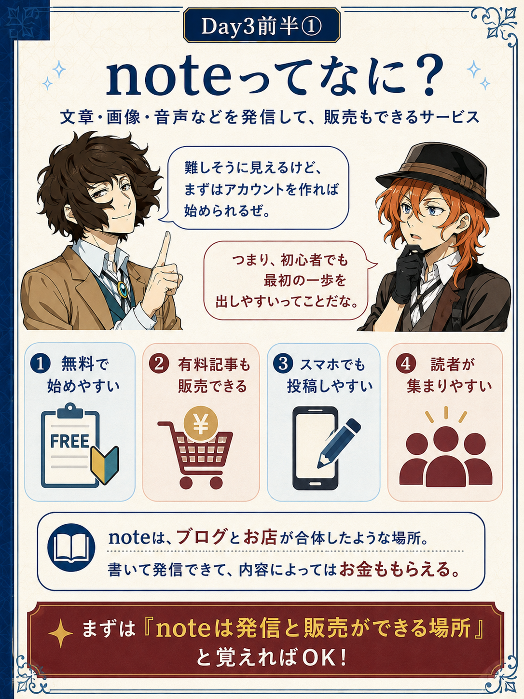
Day3前半① noteってなに？
noteは「ブログ＋お店」くらいに考えると簡単。 文章・画像・音声・動画などを発信でき、内容によっては有料で販売できます。
📝 発信文章や画像を投稿して読者に届ける。
💰 販売記事の途中から有料部分に設定できる。
📱 手軽スマホやPCから投稿できる。
👥 読者がいるゼロから自分だけでサイトを作るより始めやすい。
太宰「ブログを作るのに、サーバーとか難しい設定はいらないの？」
中也「最初はnoteのアカウントを作ればいい。余計なこと考える前に1本書け。」
敦「“発信する場所を借りる”感覚なら分かりやすいですね。」
Day3前半②
noteの初期設定は「読まれる入口」を作る
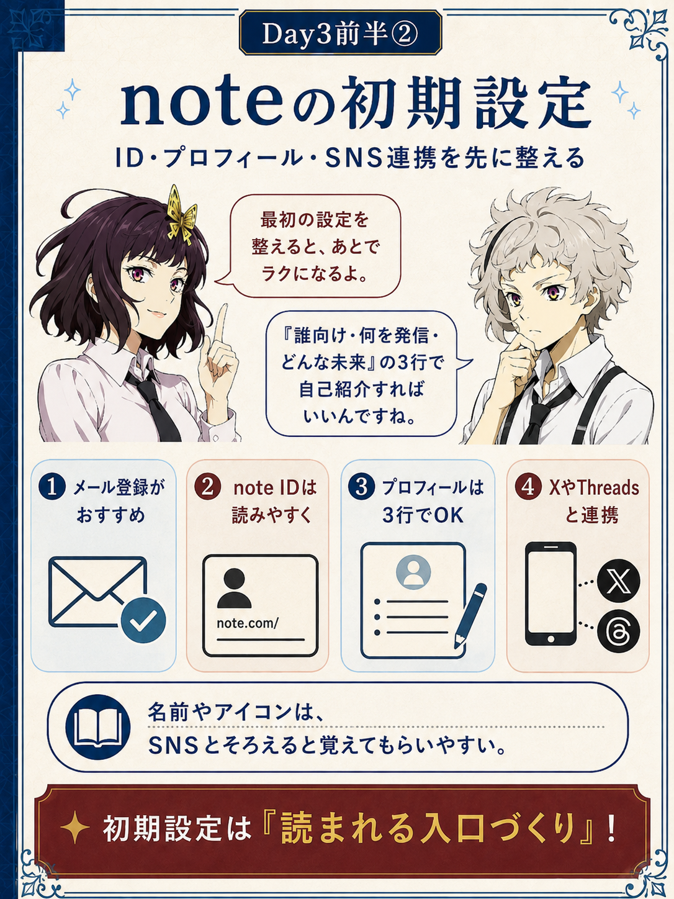
Day3前半② noteの初期設定
① 登録メールアドレスなどでアカウントを作る。
② note ID読みやすい・入力しやすい・覚えやすい名前にする。
③ プロフィール「誰向け／何を発信／どんな未来」の3行で考える。
④ SNS連携XやThreadsなど、使っている発信先とつなぐ。
名前とアイコン：ほかのSNSでも活動しているなら、名前・アイコンを近づけると「あの人だ」と覚えてもらいやすくなります。
与謝野「プロフィールで格好つけすぎなくていい。誰に、何を届ける人なのかが分かれば十分だよ。」
敦「自己紹介を長文で書かなくてもいいんですね。」
Day3前半③
記事を書く前に「売れている型」を観察する
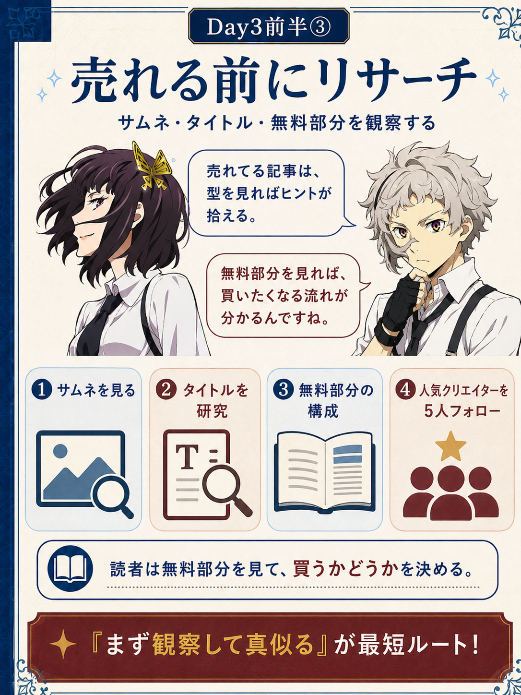
Day3前半③ 売れる前にリサーチ
いきなり自己流で書くより、まず観察。 他の人の記事を見て「読んでみたいと思った理由」を探します。
🖼️ サムネイル何が目に入り、どんな雰囲気で、文字量はどれくらい？
🧲 タイトル悩み・数字・メリット・意外性のどれで興味を引いている？
📖 無料部分最初に何を伝え、どこで「続きが読みたい」と思わせている？
- note内検索で近いテーマの記事を探す
- 有料記事も見て、無料部分の構成を観察する
- 参考になるクリエイターを5人ほど見つける
- 丸写しではなく「型」を学ぶ
谷崎「真似するって、文章をコピーすることじゃないんですね。」
森「そう。“なぜ読んでしまったのか”を観察する。それがリサーチだよ。」
Day3前半④
note投稿は5ステップで進める
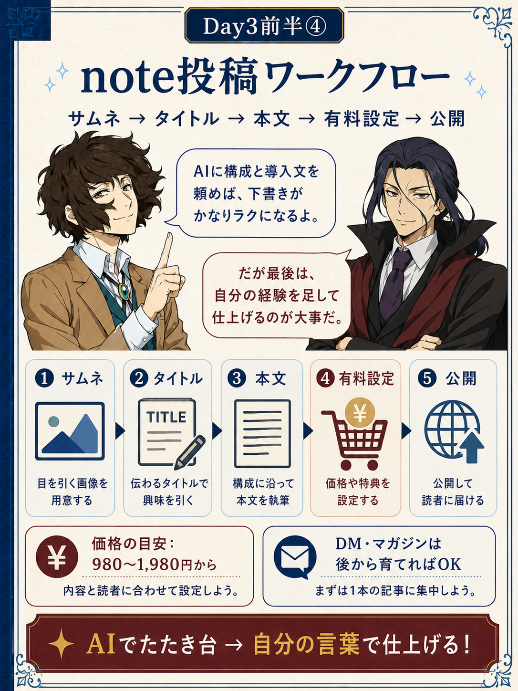
Day3前半④ note投稿ワークフロー
1サムネ目を止める画像
2タイトル読む理由を作る
3本文見出し・太字・画像
4有料設定切り替え位置・価格
5公開最終確認して投稿
売上は無料部分の見せ方に大きく左右されます。 読者の悩みを代弁し、読むメリットを示し、「この続きが知りたい」というところで有料部分へつなげます。
有料に切り替える例問題提起の後／解決策の核心に入る直前／一番知りたい答えの入口。
価格の目安として紹介初心者は980〜1,980円程度から始め、内容や実績に合わせて調整する考え方。
ハッシュタグ3〜5個程度を目安に、記事と関係するものを付ける。
AIの使い方構成・導入・見出しをAIで作る → 自分の経験を足す → AIで整える。
初心者は一気に全部やらなくてOK：まず単発記事を1本。マガジンやメンバーシップは、記事が増えてから考えても遅くありません。
太宰「AIに全部書かせて、そのまま売れば楽じゃない？」
中也「Day1でやっただろ。AIは叩き台。自分の経験と具体例を入れて仕上げろ。」
10
Notionは「情報をためて、あとで取り出す」場所
Day3前半⑤
Notionってなに？
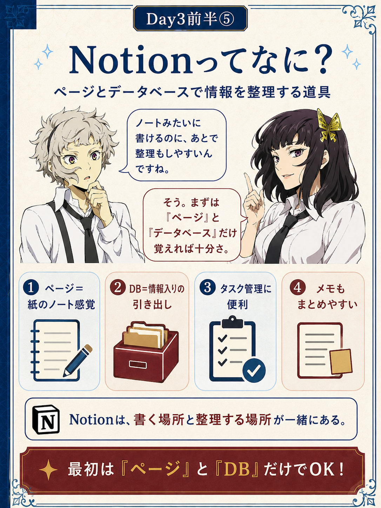
Day3前半⑤ Notionってなに？
最初は「ページ」と「データベース」の2つだけ覚えればOK。
📄 ページ普通の紙のノート。文章・チェックリスト・メモを書く。
🗃️ データベース情報入りの引き出し。1件ずつページとして保存し、あとで絞り込める。
Day3での使い方：「記事アイデア」「リサーチした記事」「下書き」「公開済み記事」を1か所にまとめておくと、AIとのやり取りが長くなっても迷いにくくなります。
敦「普通のメモ帳と何が違うんですか？」
与謝野「後から“公開済みだけ”“今週やることだけ”と取り出せる。それがデータベースの強みだよ。」
Day3前半⑥
プロパティを付けると、あとで探しやすい
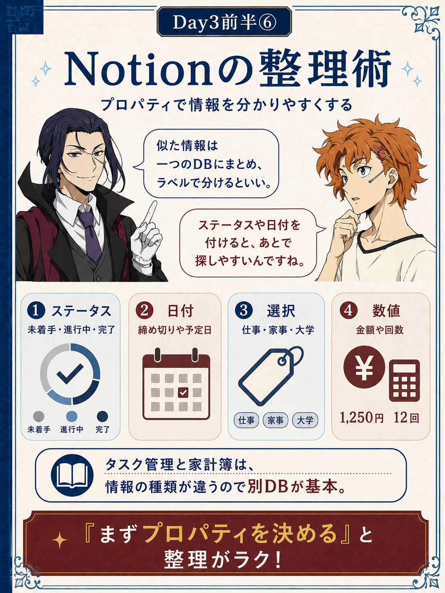
Day3前半⑥ Notionの整理術
✅ ステータス未着手／進行中／完了。
📅 日付締め切り・公開予定日。
🏷️ 選択note／SNS／仕事／家事など分類。
💰 数値金額・回数・売上など。
似た情報は1つのデータベースにまとめ、ラベルで分ける。 ただし、タスク管理と家計簿のように入れる情報そのものが違う場合は、別データベースに分けます。
森「同じ棚に置ける物はまとめる。薬品と昼食を同じ棚に入れない。考え方はそれだけだよ。」
中也「その例えは妙に怖ぇけど、まあ分かりやすいな。」
Day3前半⑦
同じ情報を「見たい形」に切り替える
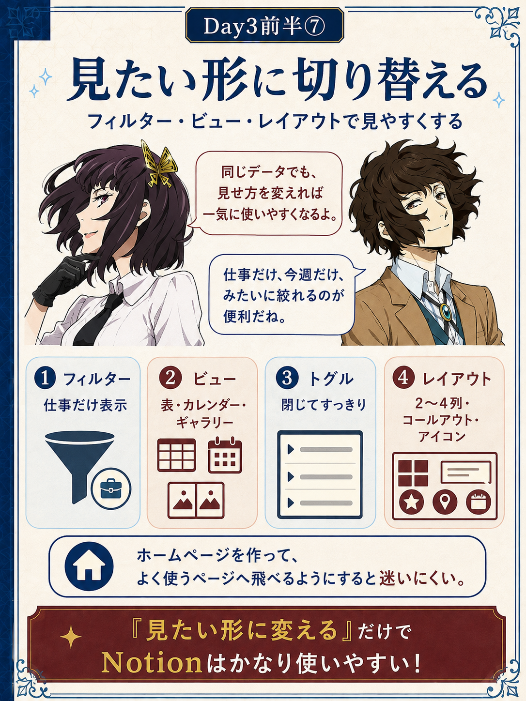
Day3前半⑦ フィルター・ビュー・レイアウト
🔍 フィルター「note記事だけ」「未完了だけ」など必要な情報だけ表示。
👀 ビュー同じ中身を表・カレンダー・ギャラリーなど別の見せ方にする。
▶ トグル長い説明を閉じて、必要な時だけ開く。
🧱 レイアウト2〜4列、コールアウト、アイコンなどで見やすく整える。
ホームページを1つ作り、よく使うページやデータベースへの入口にすると迷いにくくなります。最初から完璧なNotionを作る必要はありません。
太宰「Notion、機能が多すぎて全部触りたくない。」
谷崎「大丈夫です。最初は表だけ。必要になった時にカレンダーやフィルターを足せば十分です。」
Day3前半⑧ / 今日の実習
noteを始めて、Notionで整理する
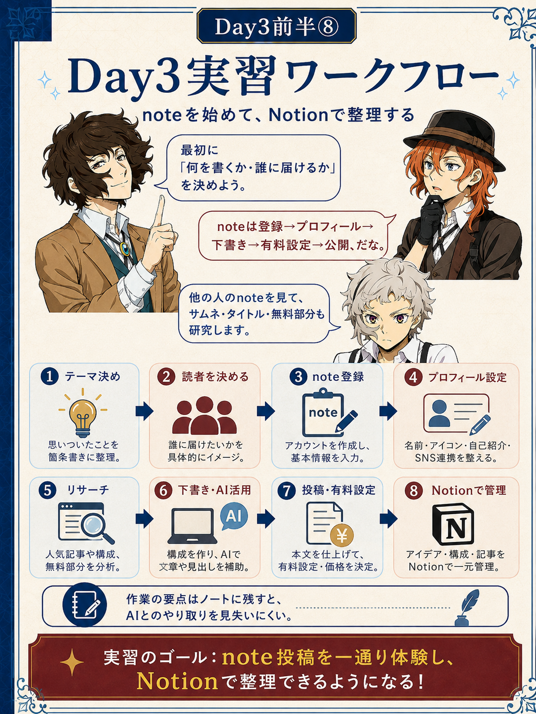
Day3前半⑧ 実習ワークフロー
1テーマ何を書く？
2読者誰に届ける？
3note登録アカウント作成
4プロフィール3行で設定
5リサーチサムネ・タイトル・無料部
6下書きAIも使って作る
7有料設定位置・価格・確認
8Notion要点を整理
実習のポイント：
① noteのアカウントを作る。
② プロフィールを設定する。
③ 他の人のnoteを見て「サムネ・タイトル・無料部分」をメモする。
④ テスト記事を1本作る。
⑤ 有料部分の切り替え位置と価格設定を確認する。
⑥ 決めたこと・参考にした記事・次に直すことをNotionへ残す。
敦「今日は“売る”ことより、一通り操作して流れを覚えるのが目的なんですね。」
中也「そうだ。設定画面で固まって何も出さねぇより、まず1本通してみろ。」
太宰「そして忘れる前にNotionへ？」
与謝野「要点だけ残す。次に同じことをやる自分への説明書だね。」
Day3前半のゴール：
noteのアカウント作成からプロフィール設定、リサーチ、記事投稿、有料記事の設定・確認までを一通り体験する。
あわせて、作業の要点をNotionで整理できるようになる。
DAY3 後半 / note・Notion活用＋ブログ集客
「書く場所」「整理する場所」「集客する仕組み」を、
ひとつの流れとしてつなげる。
PCが苦手でも、全部の機能を暗記する必要はありません。noteで発信し、Notionで整理し、ブログを少しずつ育てる。今日はこの流れを実際の作業として覚えます。
Day3後半の考え方：
note＝発信と販売。Notion＝自分の管理基地。ブログ＝長く働く集客資産。
いきなり広告を全部やめるのではなく、「自分でお客様を呼べる場所」を少しずつ育てます。
11
note・Notionを「使える道具」にする
Day3後半①
note運用は「リサーチ → 作る → 公開 → 改善」
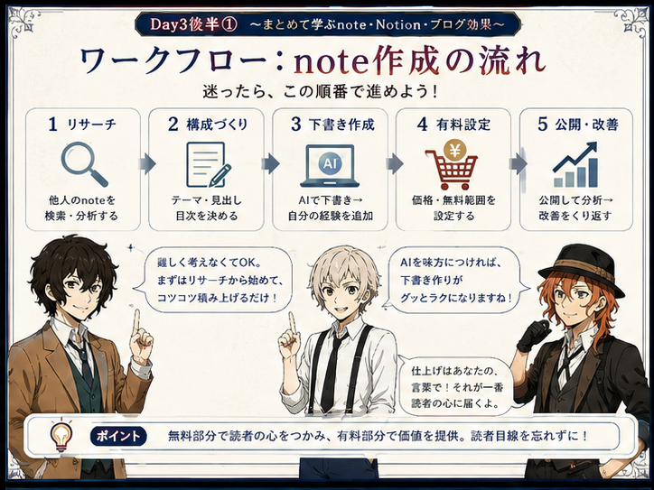
Day3後半① note作成の流れ
noteは、思いついた瞬間に本文を書き始めなくてOK。 先に「何を書くか」「誰に届けるか」を決めると迷いにくくなります。
1リサーチ他の記事を見る
2構成見出しを決める
3下書きAIも補助に使う
4設定無料・有料を決める
5公開・改善反応を見て直す
太宰「思いついたら、その勢いで2000字書けばいいんじゃない？」
中也「途中で迷子になる未来が見える。先に読者と見出しを決めろ。」
敦「AIは“本文を全部任せる人”じゃなくて、構成や下書きを手伝う人なんですね。」
Day3後半②
noteは「入口 → 本文 → 有料部分」を整える
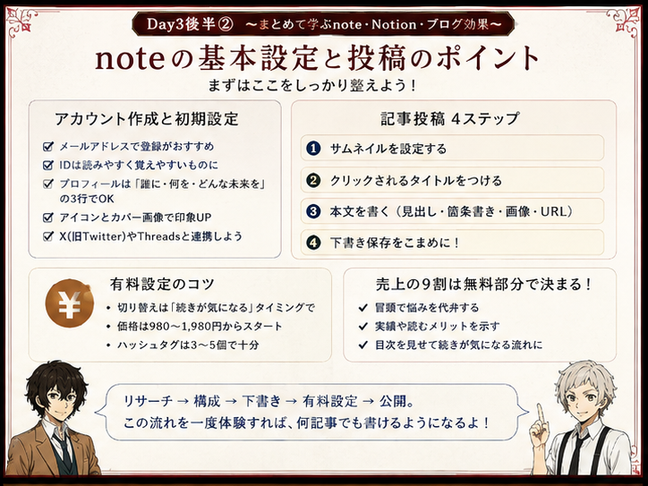
Day3後半② noteの設定と投稿
👤 入口ID・名前・アイコン・プロフィールを分かりやすくする。
🖼️ 見た目サムネイルとタイトルで「何の記事か」を伝える。
📖 無料部分悩み・読むメリット・記事の流れを見せる。
💰 有料部分一番知りたい内容へ入る手前などで切り替える。
前半で体験したアカウント作成・プロフィール設定・記事投稿を、今度は「読者からどう見えるか」を考えながら整えます。
注意：noteの画面・料金・機能名はアップデートで変わることがあります。教材では操作の名前より「プロフィールを整える」「無料と有料の境目を確認する」といった考え方を覚えます。
与謝野「設定項目を全部埋める競争じゃないよ。読者が迷わない入口を作ればいい。」
谷崎「まず1本投稿して、必要になった機能を後から覚える方が楽ですね。」
Day3後半③
Notionは「自分だけのコントロールセンター」
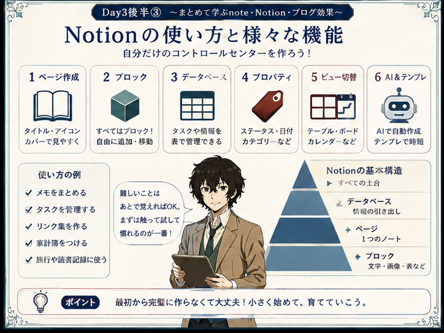
Day3後半③ Notionの使い方と様々な機能
🧱 ブロック文字・見出し・画像・リストなど、ページを作る部品。
📄 ページメモや資料を書く1枚のノート。中にサブページも作れる。
🗃️ データベースタスクや記事案を一覧で管理し、条件で取り出せる。
🏠 ワークスペースページやデータベース全部を置く、自分の作業場所。
- 「/」で見出し・トグル・コールアウトなどを呼び出す
- URLを貼ってリンクや動画をまとめる
- 2列レイアウトでメモとリンク集を並べる
- ステータス・期限・カテゴリーなどのプロパティを付ける
- テーブル・ボード・カレンダー・ギャラリーなどビューを切り替える
- よく使うページはお気に入りにする
- テンプレートはコピーして、自分用に少しずつ直す
AI機能も「基礎が分かるほど頼みやすい」：ページ、データベース、プロパティの意味が分かれば、「記事管理DBを作って」「公開日とステータスを追加して」のように具体的に頼めます。
森「Notionは最初から豪邸を建てる必要はないよ。まず机と引き出しを1つずつ置けばいい。」
敦「ページが机、データベースが整理できる引き出し……くらいから始めればいいんですね。」
Day3後半④
ブログは「広告を止めても残る集客資産」を育てる
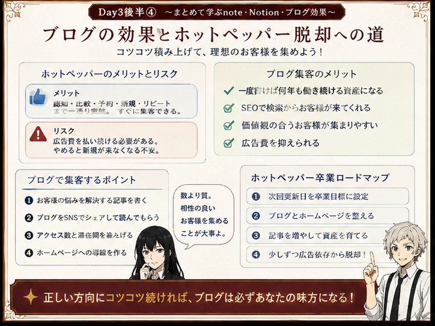
Day3後半④ ブログの効果と自力集客
ホットペッパーのような集客媒体は便利ですが、掲載を止めた時に新規客も止まるなら、集客の入口を1つに頼りすぎていると考えます。
広告・媒体だけ
すぐに人を呼びやすい一方、掲載や広告を止めると入口も弱くなりやすい。
ブログ・ホームページを育てる
時間はかかるが、過去記事が検索から見つかり続ける「自分の資産」になりうる。
特に1人サロンのような仕事では、単に人数を増やすより、考え方・人柄・得意分野を読んで「この人にお願いしたい」と来てくれる人を増やす考え方が大切です。
中也「今日いきなり広告を全部切れ、って話じゃねぇぞ。」
太宰「珍しく安全運転だね。」
中也「次の更新日までに、自分の入口を育てる。段階的にやれってことだ。」
12
実際に「1本作る」ところまでやる
Day3後半⑤ / 実習①
最初に「何を書くか」「誰に届けるか」を決める
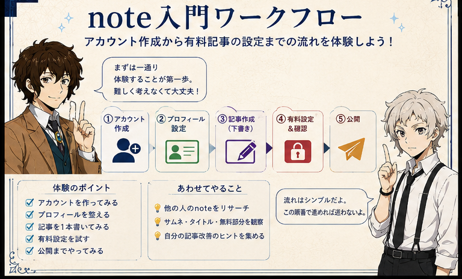
Day3後半⑤ note実習の全体像
1テーマ何を書く？
2読者誰に届ける？
3登録noteを準備
4投稿1本作ってみる
テーマは難しく考えず、過去の自分が困ったこと・人に説明できること・実際に試したことから選びます。
太宰「壮大な人生哲学を書こうかな。」
敦「最初はもっと小さくていいんじゃ……。“初心者がCanvaで最初につまずいた3つ”とか。」
中也「敦の方が分かってんじゃねぇか。」
Day3後半⑥ / 実習②
他の人のnoteを3か所だけ見る
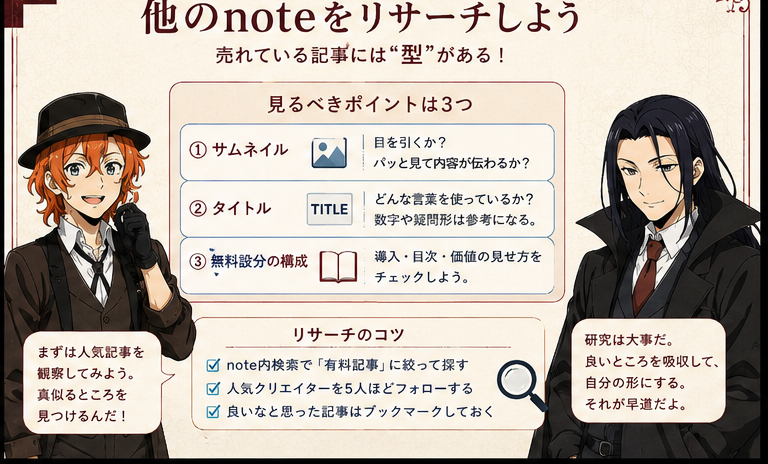
Day3後半⑥ サムネ・タイトル・無料部分をリサーチ
🖼️ サムネイル何が目を引く？ 文字は多い？ 写真？ イラスト？
🧲 タイトルどんな言葉や数字で「読みたい」と思わせている？
📖 無料部分悩み・実績・メリット・目次をどんな順番で見せている？
目的はコピーではなく観察。 「自分がなぜ続きを読みたくなったのか」をメモして、自分の記事に使える型だけ借ります。
森「良い例を観察して、理由を言葉にする。これは文章でもデザインでも同じだね。」
敦「“売れてるから真似する”じゃなく、“なぜ伝わるか”を見るんですね。」
Day3後半⑦ / 実習③
サムネ → タイトル → 本文 → 有料設定 → 確認
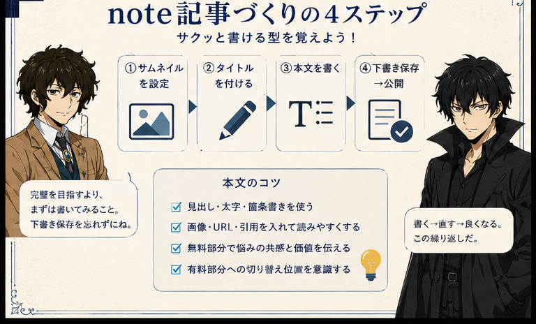
Day3後半⑦ 記事作成・有料設定を体験
1サムネ記事の顔
2タイトル読む理由
3本文見出しで整理
4有料設定境目と価格
5確認公開前チェック
AIを使うなら：
「このテーマで初心者向けの見出しを5つ」→「導入文を300字」→ 自分の経験を追加 →「文章を読みやすく整えて」。
1回で全部頼むより、工程を分ける方が自分の意図を残しやすくなります。
与謝野「AIがきれいに書いても、あなたの経験まで勝手に作らせないこと。」
太宰「そこはDay1から何度も怒られてるところだね。」
Day3後半⑧ / 実習④
Notionに残し、ブログを「次も使える資産」にする
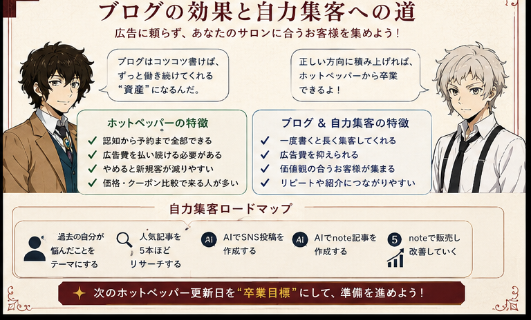
Day3後半⑧ 自力集客を少しずつ育てる
1悩みを探す誰の何を解決？
2記事を書く自分の経験を入れる
3SNS共有読んでもらう
4記録反応をNotionへ
5改善次の記事へ活かす
Notionに残すと楽になるもの：
記事URL／テーマ／想定読者／参考にした記事／使ったサムネ／公開日／反応／次に直したいこと。
ブログ集客はすぐ結果が出る方法ではありません。だからこそ、次の広告・媒体更新日を目標日にして、半年・1年かけて自力集客の比率を上げるような進め方が現実的です。
敦「1記事で卒業、ではないんですね。」
中也「当たり前だ。コツコツ積んで、“広告しか入口がない状態”を少しずつ変えるんだよ。」
太宰「地味だけど、後から働き続けてくれるなら悪くないね。」
Day3後半のゴール：
noteの設定・投稿・有料記事確認を一通り体験し、他の記事をリサーチする。
Notionで作業を整理しながら、ブログを「自分でお客様を呼ぶための長期資産」として育てる考え方を理解する。
DAY4 前半 / SEOキーワード選定 超・初心者向け
記事を書く前に、
「どの言葉で勝つか」を決める。
SEOは、思いついたテーマを片っ端から書くゲームではありません。検索される言葉の中から、読者の悩みと自分のサイトの実力に合うキーワードを選び、勝ちやすい場所から記事を積み上げます。
SEOのキーワード選定は、検索される言葉の中から「自分が勝てるキーワード」を見つける作業。
検索ボリューム・検索意図・競合の強さ・サイトの実力を見て、最初はミドルやロングテールなど狙いやすい言葉から始める。
「何を書くか」より先に「どのキーワードなら勝てるか」を考えるのがDay4前半の中心です。
13
まず「検索される言葉」と「勝てる場所」を探す
Day4前半①
キーワード選定ってなに？
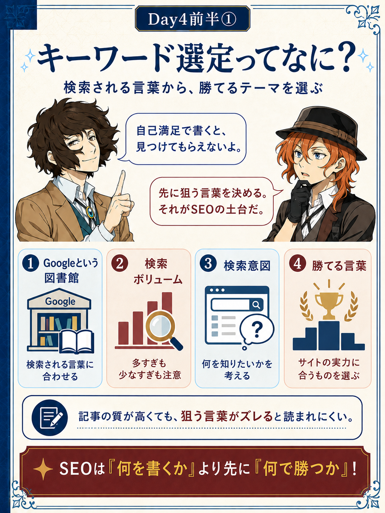
Day4前半① キーワード選定ってなに？
一言なら「Googleで、どの言葉を入口にして読者を呼ぶか決める作業」。 文章が上手でも、誰も検索しない言葉や強すぎる言葉ばかり狙うと、読まれるまでが大変です。
📚 Googleという図書館検索される言葉に合わせて「この棚に置いてください」と記事のテーマをはっきりさせる。
📈 検索ボリュームその言葉がどれくらい検索されるかを見る目安。
🧠 検索意図その言葉で検索した人が、本当は何を知りたい・解決したいのか考える。
🏆 勝てる場所検索数だけでなく、競合と自分のサイトの強さを比べて選ぶ。
太宰「好きなことを書いて、Googleがいい感じに読者を連れてきてくれないの？」
中也「店の看板も出さずに客が来ると思うな。まず“何の店か”を検索する言葉で決めるんだよ。」
敦「記事を書く前に、入口の看板を決める感じですね。」
Day4前半②
ビッグ・ミドル・ロングテールをざっくり分ける
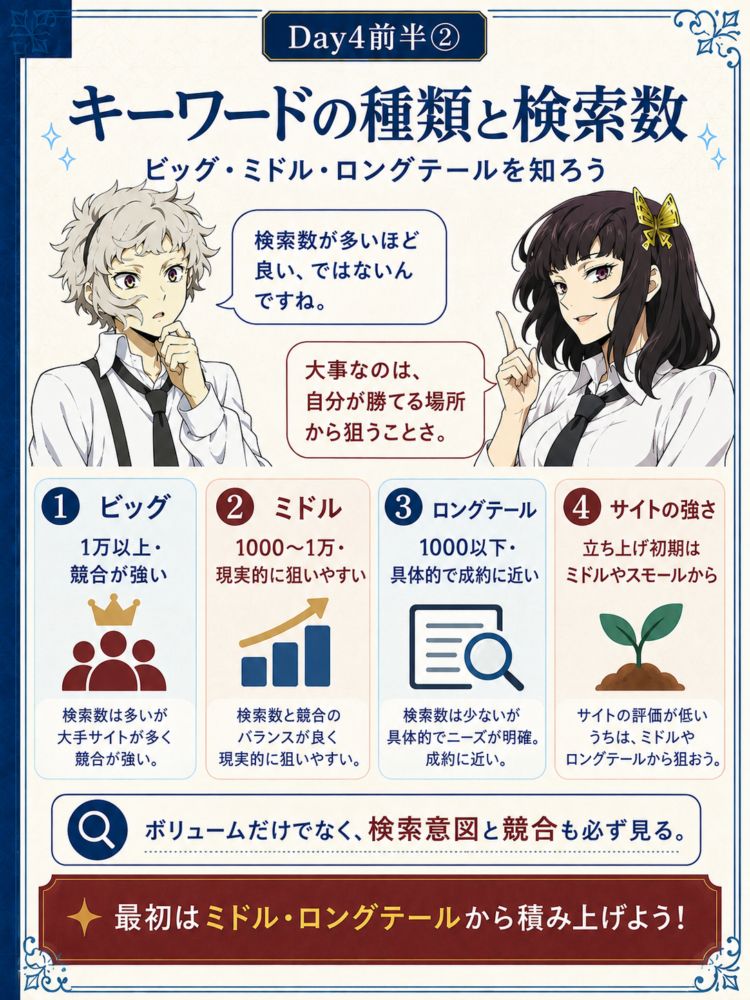
Day4前半② キーワードの種類と検索数
🏔️ ビッグ動画で紹介された目安では検索数1万以上。例「ダイエット」「旅行」。人は多いが強いサイトも多い。
⛰️ ミドル目安は1000〜1万。例「置き換えダイエット」。大きすぎず小さすぎず、現実的な候補になりやすい。
🔎 ロングテール目安は1000以下。例「酵素ドリンク ダイエット 効果」。具体的で、悩みや行動が見えやすい。
「検索数が多い＝良いキーワード」ではありません。 立ち上げ直後のサイトなら、まずミドルやロングテールで小さく勝ち、記事と評価を積み上げる考え方が基本です。
数字は絶対ルールではなく目安：教材では「検索数・競合・検索意図・サイトの強さを一緒に見る」という考え方を覚えます。
敦「検索される回数が多い言葉を選べばいいと思ってました。」
与謝野「人が多い場所ほど競争相手も多い。初心者は“勝てる広さ”から始めた方がいいよ。」
Day4前半③
キーワード選定は6ステップで進める
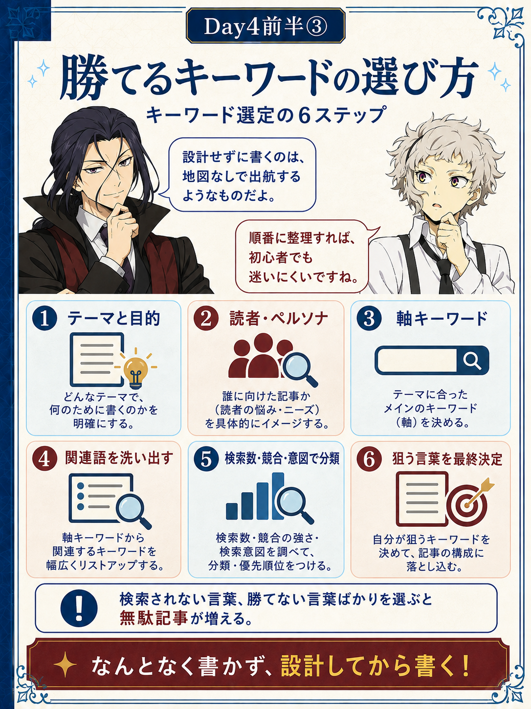
Day4前半③ 勝てるキーワードの選び方
1テーマ・目的何のサイト？何を届ける？
2読者誰の悩みを解く？
3軸KW中心の言葉を決める
4関連語候補を広げる
5分類検索数・競合・意図を見る
6決定狙う言葉を絞る
「SEO記事を書いて」とAIにいきなり頼む前に、テーマ・読者・キーワード候補を先に決めます。順番があるだけで、初心者でもかなり迷いにくくなります。
森「設計せずに本文を書くのは、地図なしで目的地へ向かうようなものだね。」
太宰「気合いで着く可能性は？」
中也「その無駄な気合いを6ステップに使え。」
Day4前半④
SEOロジックは「サイト全体」と「記事単体」で考える
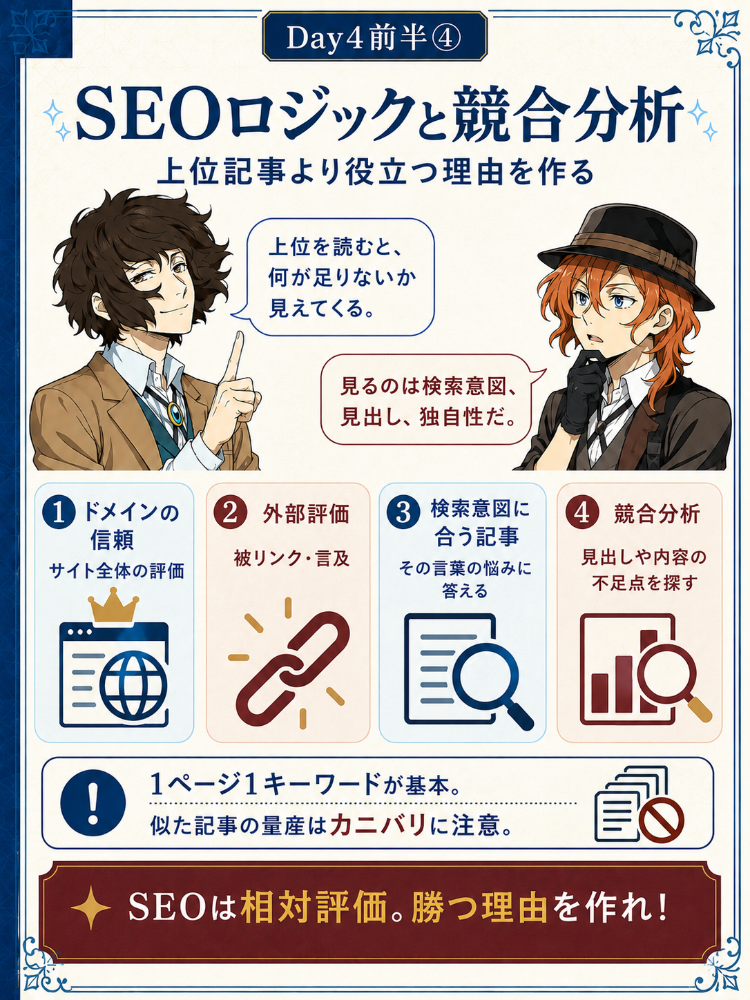
Day4前半④ SEOロジックと競合分析
動画の説明を初心者向けに言い換えると、SEOではざっくり「サイト全体の積み上げ」「外からの評価」「そのキーワードへの答えとして適切か」を考えます。
① サイト全体の評価記事の蓄積、内部リンク、オリジナル性など、サイト全体が育っているか。
② 外部からの評価被リンクや外部での言及など、他の場所から評価・参照されているか。
③ キーワードへの適切さその検索意図に対して、記事がちゃんと答えになっているか。
SEOは相対評価。「自分の記事が良いか」だけではなく、今の上位記事と比べて「何が足りないか」「何なら自分が足せるか」を見ます。
太宰「僕が100点だと思えば100点では？」
中也「検索結果はお前の自己採点表じゃねぇ。上にいる相手と比べろ。」
敦「だから競合分析が必要なんですね。」
14
競合を見て「勝てる理由」を作る実習
Day4前半⑤ / 実習①
Day4実習：キーワードから記事設計までつなげる
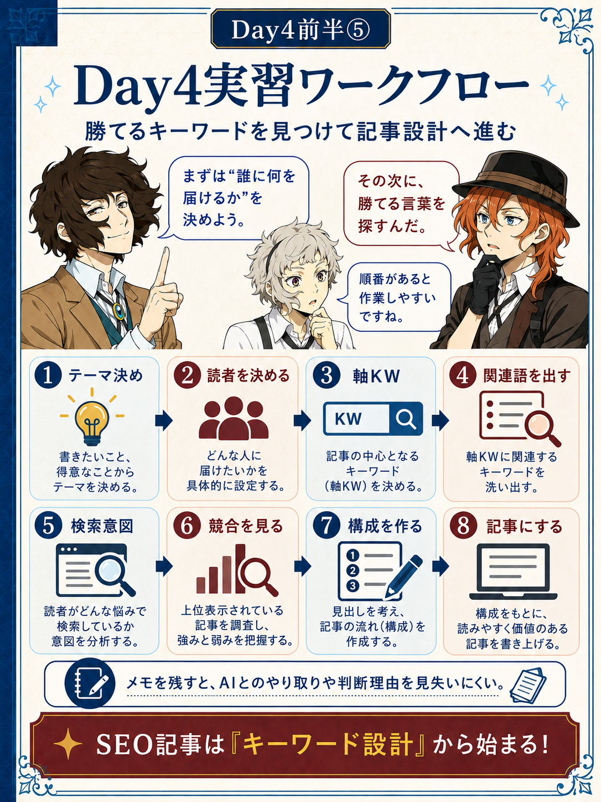
Day4前半⑤ 実習ワークフロー
1テーマ・読者誰に何を届ける？
2候補を出す軸KW＋関連語
3勝てるか見る検索意図・競合・検索数
4構成へ見出し→記事にする
今日の作業メモに残すもの：
①選んだキーワード ②なぜ狙うか ③想定読者 ④検索意図 ⑤競合の強み ⑥自分が足す独自情報。
AIとの会話が長くなっても、この6つが残っていれば戻りやすくなります。
敦「いきなり記事を書くんじゃなく、判断理由までメモするんですね。」
森「理由が残れば、3か月後に見直す時も“なぜ選んだか”を検証できるからね。」
Day4前半⑥ / 実習②
競合は全文より、まず「見出し」を見る
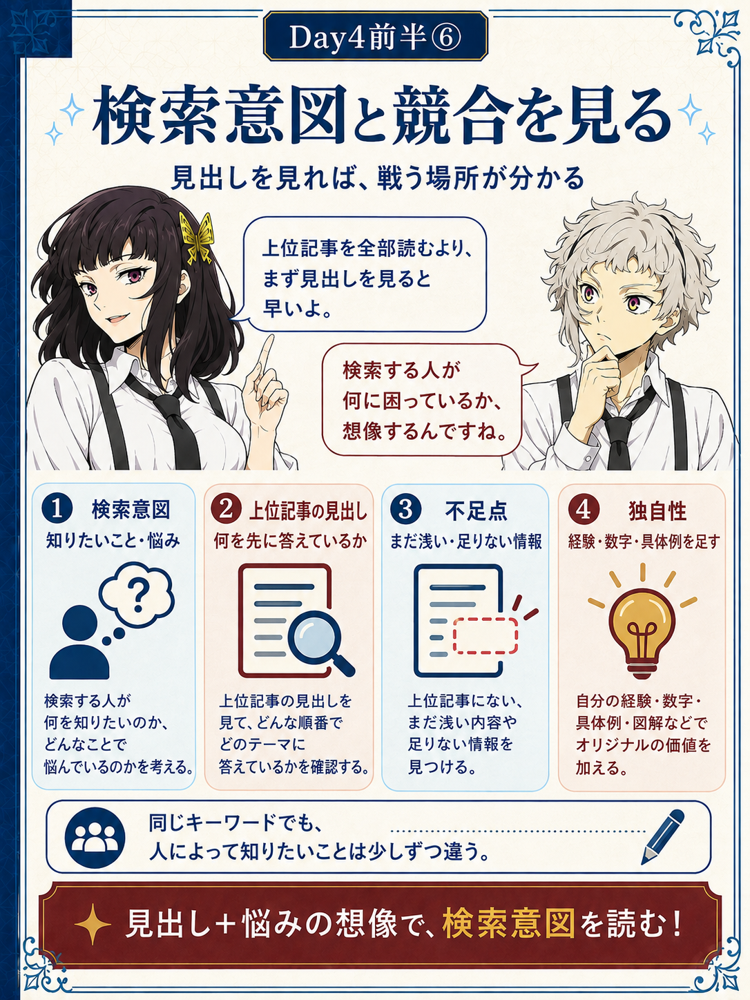
Day4前半⑥ 検索意図と競合を見る
🧠 検索意図検索した人は何に困り、何を知ったら満足する？
📑 上位の見出し何を、どんな順番で答えている？
🕳️ 不足点まだ浅い説明、足りない具体例、分かりにくい部分は？
💡 独自性自分の経験・数字・検証・図解・具体例を何で足せる？
上位記事を全部読むと時間がかかります。まずタイトル・目次・H2/H3を見て、「この検索では何を答えるのが普通なのか」をつかみます。
与謝野「競合を丸写しするんじゃない。共通して必要な情報を見つけて、その上に自分の価値を足すんだよ。」
敦「見出しだけでも、検索する人が求めている話の流れが見えてくるんですね。」
Day4前半⑦ / 実習③
初心者は「1ページ1キーワード」で役割を整理する
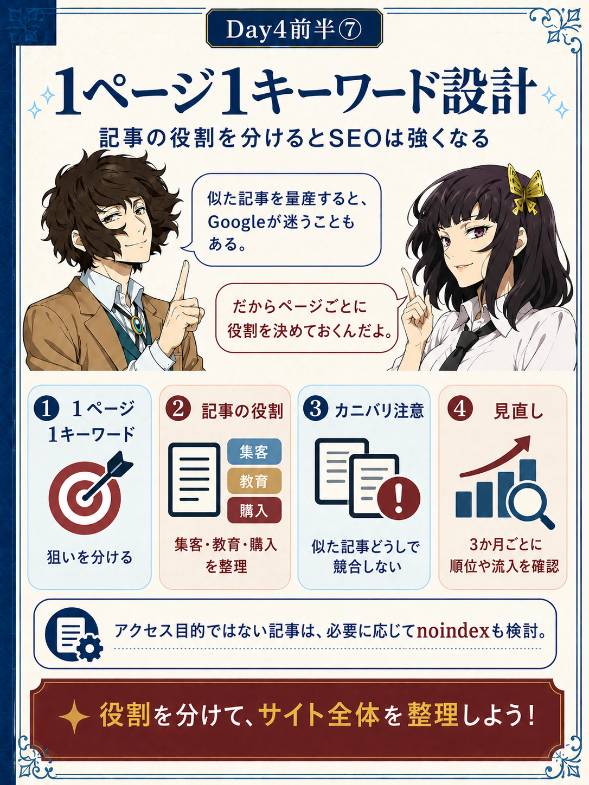
Day4前半⑦ 1ページ1キーワード設計
似た記事を何本も作り、同じキーワードを奪い合うと、どのページを評価すればよいか分かりにくくなることがあります。教材ではこれをカニバリゼーションとして注意します。
🎯 1ページ1キーワード初心者向けの基本ルールとして、各ページの主役を1つ決める。
🧩 記事の役割集客／教育／購入など、そのページの仕事も決める。
⚠️ 重複チェック似たテーマの記事がすでにないか確認する。
🔁 定期見直し順位・流入キーワードを見て、3か月程度を目安に再確認する。
検索ボリューム0について：教材では基本的に避ける考え方。ただし新しい造語や教育目的など、アクセス以外の役割がある記事は別です。
太宰「似た記事を10本書けば、10倍強くなる？」
与謝野「同じ役割ばかりなら、むしろ整理した方がいいこともあるよ。」
Day4前半⑧ / 実習④
SEOは「小さく勝つ → 評価を積む → 次へ」で育てる
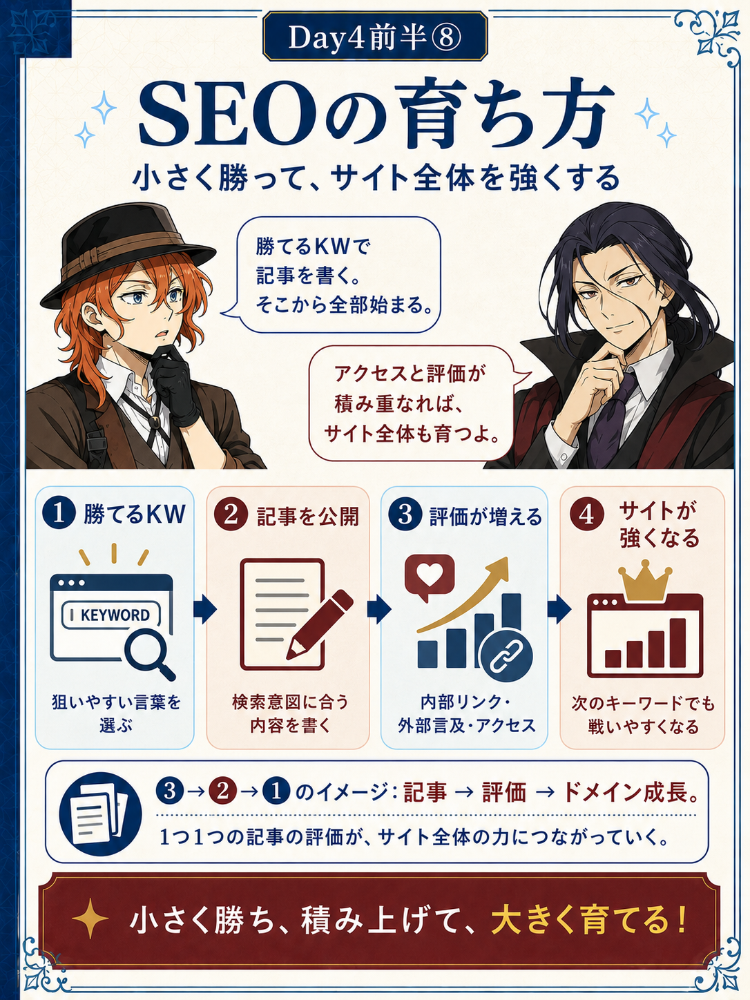
Day4前半⑧ SEOの育ち方
1勝てるKW狙いやすい言葉を選ぶ
2記事公開検索意図に答える
3評価を積むアクセス・内部リンク・言及
4次へ少し強いKWへ挑戦
動画で紹介された「3→2→1」のイメージは、まず記事単位で勝つ → アクセスや外部評価が積み上がる → サイト全体が強くなるという育て方です。
全部のSEO指標を毎回細かく調べると続きません。 日常運用では「検索意図に合うか」「競合に勝てる理由があるか」「自分のサイトで現実的か」を短時間で判断できる形に落とすことが大切です。
中也「最初から“ダイエット”で1位を取ろうとすんな。小さい勝ちを拾って足場を作れ。」
敦「記事を書く量より、“勝てる場所を選んで積み上げる”方が大事なんですね。」
太宰「つまり無謀な正面突破より、勝てるところから？」
中也「SEOでは珍しく理解が早ぇじゃねぇか。」
Day4前半のゴール：
検索ボリューム・検索意図・競合・サイトの実力を見ながら「自分が勝てるキーワード」を選ぶ。
1ページ1キーワードを基本に役割を整理し、競合記事の見出しを確認して、検索意図に合った独自性のある記事設計へつなげる。
DAY4 後半 / Google Trends × ラッコキーワード × SEO分析
検索されている言葉を調べて、
「次に何を書くか」を決める。
今回は、難しいSEO理論を暗記する回ではありません。検索されている言葉を見て、候補を集め、AIに整理を手伝ってもらい、次の記事テーマを決める実習です。
第4回後半は、Google Trendsで検索されているキーワードや関連語を調べ、自分が書く記事テーマを決める実習。
調べたキーワードをGeminiに渡してテーマ案を出してもらい、最後にGoogleドキュメントへ保存します。
15
検索ニーズを調べる
Day4後半①
Google Trendsで「今、何が検索されている？」を見る
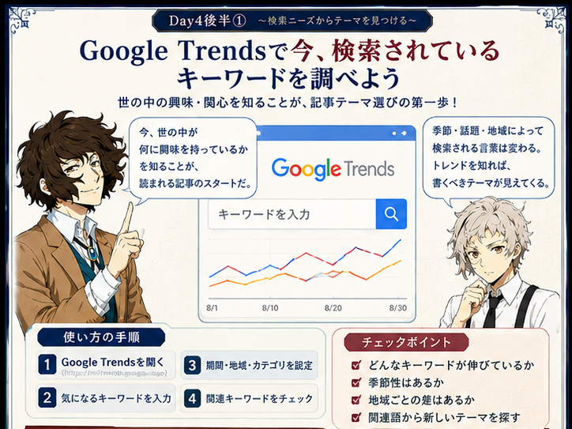
Day4後半① Google Trendsで今を知る
Google Trendsは、検索の人気がどう動いているかを見る道具。 気になる言葉を入れて、伸びているか、季節で変わるか、関連する言葉は何かを確認します。
1入力気になる言葉
2確認グラフを見る
3関連語ヒントを探す
4メモ候補を残す
太宰「自分が書きたいことだけ書けばいいんじゃない？」
中也「読者が探してなきゃ届かねぇ。まず“今、何が検索されてるか”を見ろ。」
敦「書きたいことと、検索されていることが重なる場所を探すんですね。」
Day4後半②
ラッコキーワードで「その次に知りたいこと」を探す
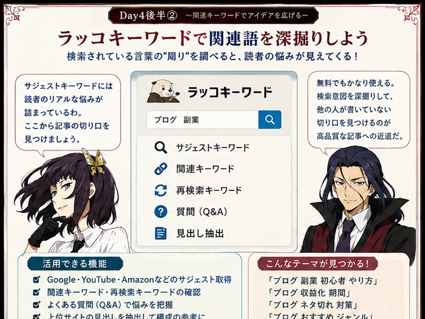
Day4後半② ラッコキーワードで深掘り
1つのキーワードから、関連語・サジェスト・質問・再検索語を広げる。 これで読者が何に困っているかが見えやすくなります。
サジェスト一緒に検索されやすい言葉。
再検索キーワード検索したあと、さらに調べられる言葉。
質問「よくある質問」から悩みを拾う。
競合見出し上位記事のH2/H3を比較する。
大事：競合見出しを集めるだけでは似た記事になりやすい。ペルソナ、検索意図、自分の体験や数字も足して独自性を作ります。
与謝野「ツールは文章を真似するためじゃない。読者の疑問を見つけるために使うんだよ。」
敦「検索されている言葉の“周り”を見ると、悩みが具体的になるんですね。」
Day4後半③
「検索される・競合が弱い・意図が明確」を狙う
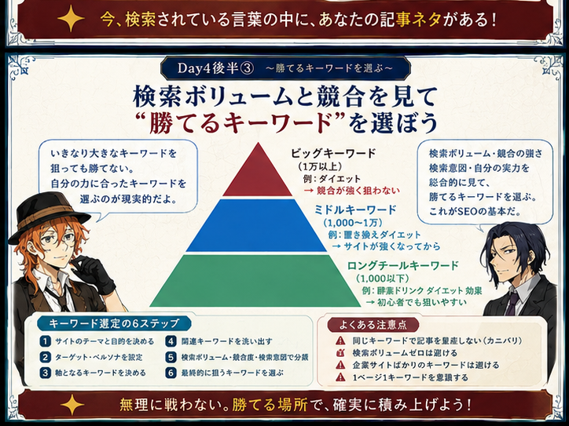
Day4後半③ 勝てるキーワードを探す
前半で覚えた「勝てるキーワード」を、実際のデータで探します。弱めの個人ブログでも上位にいる言葉は、候補として観察する価値があります。
検索ボリューム実際に検索されている？
競合大企業だらけではない？
検索意図何を知りたい人か分かる？
独自性自分の経験や具体例を足せる？
中也「強い相手が並んでる場所に、わざわざ突っ込む必要はねぇ。」
太宰「勝てる場所を選ぶ。SEOらしく現実的だね。」
Day4後半④
SEOツールは「役割分担」で使う
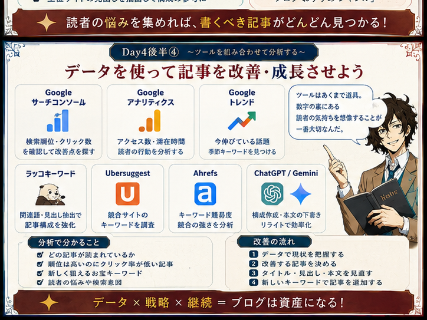
Day4後半④ SEO分析ツールを組み合わせる
Search Console検索語・表示回数・CTR・順位。
Google Trends人気の動き・季節性・関連語。
ラッコキーワード関連語・質問・競合見出し。
Ubersuggest / Ahrefs競合キーワードや難易度の判断材料。
Analytics記事に来た後の行動を見る。
ChatGPT / Gemini材料整理・構成・下書きの補助。
ツールが答えを決めるわけではありません。 数字の裏にいる読者を想像し、「次に何を書くか」「何を直すか」を人が判断します。
森「道具が増えても、考える人が要らなくなるわけではないよ。」
敦「データを集めるのはツール、意味を考えるのは人なんですね。」
16
Google Trends → Gemini → Googleドキュメントで実習
Day4後半⑤ / 実習①
Google Trendsで記事テーマ候補を3〜5個出す
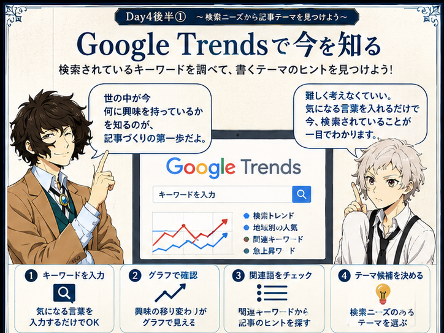
Day4後半⑤ Trends実習
1開くTrends
2入力軸キーワード
3見る伸び・関連語
4残す候補3〜5個
最初から1個に決めなくてOK。
候補をいくつか並べてから、検索意図と競合を見て絞ります。
敦「正解のキーワードを一発で当てなくていいんですね。」
中也「候補を出して比べりゃいい。そこを怖がる必要はねぇ。」
Day4後半⑥ / 実習②
候補を「検索意図・競合・自分の強み」で絞る
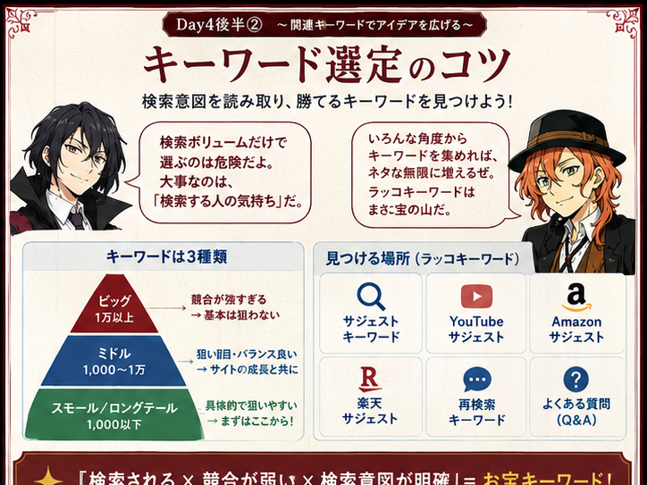
Day4後半⑥ キーワード候補を絞る
- 検索されているか
- 競合が強すぎないか
- 誰のどんな悩みか説明できるか
- 自分の経験・数字・具体例を足せるか
- 既存記事と同じキーワードを奪い合わないか
与謝野「検索数だけで決めないこと。読者の顔が見える言葉を選ぶんだよ。」
太宰「数字と人間、両方を見るわけだね。」
Day4後半⑦ / 実習③
Geminiに材料を渡して「記事テーマ案」を出してもらう
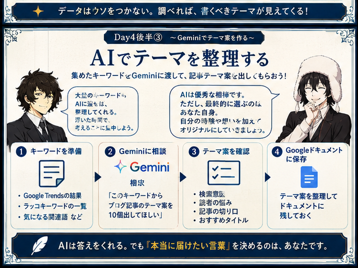
Day4後半⑦ Geminiでテーマ案を作る
キーワードだけ渡すより、「誰向け」「どんな悩み」まで一緒に伝える。
△
「このキーワードで記事案を考えて」
◎
「候補KWは○○。対象は初心者。検索意図を整理し、記事テーマを5案。各案に狙う読者と理由も付けて」
森「AIは整理役として便利だ。でも“本当に誰へ届けるか”を決めるのは君だよ。」
敦「前半で集めた材料が、ここでAIへの指示になるんですね。」
Day4後半⑧ / 実習④
決定したテーマをGoogleドキュメントへ保存する
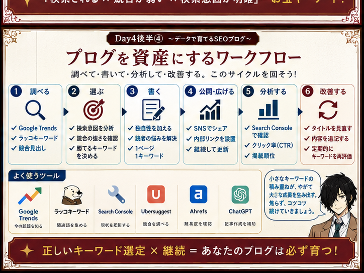
Day4後半⑧ 調査結果を保存して次へ
残しておく項目：
選んだキーワード／関連語／検索意図／想定読者／競合で気づいたこと／Geminiの案／最終テーマ／そのテーマを選んだ理由。
ここまで残せば、次回「なんでこのテーマにしたんだっけ？」になりません。調べる → 選ぶ → AIで整理 → 保存までが今回のワークフローです。
太宰「調べ終わったらブラウザを閉じて満足……」
中也「それが一番もったいねぇ。採用理由まで残せ。」
敦「保存しておけば、次の記事構成にそのままつなげられますね。」
Day4後半のゴール：
検索ニーズを調べて「何について書くか」を決める。
Google Trends・ラッコキーワードで候補を探し、Geminiで整理し、Googleドキュメントへ保存できれば完了です。
DAY5 前半 / 記事構成案 × SEOタイトル × PREP法
本文を書く前に設計し、
タイトルで価値を伝える。
検索意図を調べ、読者の悩みと自分の経験を整理し、その情報をAIへ渡して「SEOを意識したタイトル」と「PREP法に沿った目次構成」を作る流れを学びます。
タイトルは、重要キーワードを前半に置き、30文字前後を目安に、数字・ターゲット・メリットなどを自然に入れるのが基本。
ただし、クリック狙いで盛りすぎず、本文内容と一致していて、読者に一目で価値が伝わることが最重要です。
17
本文を書く前に「記事の設計図」を作る
Day5前半①
記事構成案ってなに？
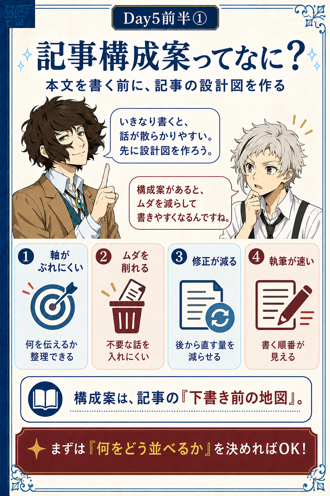
Day5前半① 記事構成案はブログの設計図
記事構成案は、本文を書く前に作る「設計図」。 いきなり本文を書き始めると、話が散らかる・同じ説明を繰り返す・検索意図からズレる、といった事故が起こりやすくなります。
🏗️ 軸がブレにくい「誰に、何を、どの順番で伝えるか」が見える。
✂️ ムダを削れる読者に必要ない情報を本文前に落とせる。
⏱️ 修正時間を減らせる後から大きく直す回数が減る。
🧭 書く順番が見える手が止まりにくくなり、本文作成が楽になる。
太宰「思いついた順に書く方が自由でいいんじゃない？」
敦「でも途中で“何の話でしたっけ？”になりそうです……。」
中也「だから先に骨組みを作るんだよ。本文はその後だ。」
Day5前半②
検索意図を先にリサーチする
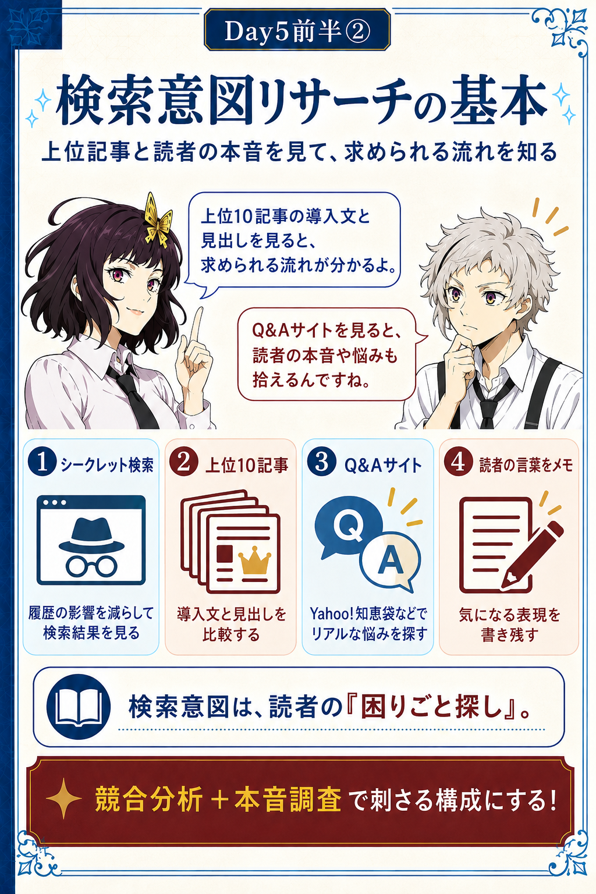
Day5前半② 検索意図リサーチ
上位10サイトのタイトル・導入文・H2/H3を確認すると、読者がそのキーワードで何を求めているか見えやすくなります。シークレットモードを使えば、自分の検索履歴の影響も減らせます。
1検索シークレットモード
2上位記事導入・見出し
3Q&Aリアルな悩み
4メモ必要情報を整理
Yahoo!知恵袋などのQ&Aサイトを見ると、競合記事では拾いにくい「本音」「不安」「具体的な状況」も見つけられます。
与謝野「検索意図を外したら、どれだけ丁寧でも“欲しかった答えじゃない記事”になるよ。」
敦「上位記事だけじゃなく、実際の悩みも見るんですね。」
Day5前半③
一般論に「自分の経験」を足す
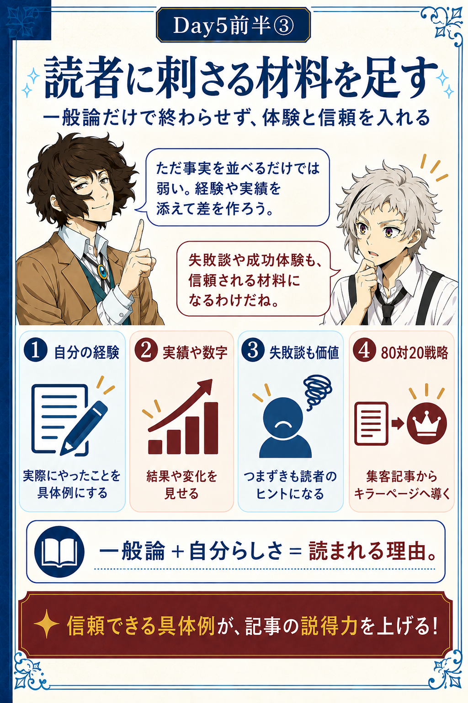
Day5前半③ 具体例と独自性
一般論だけでは、他の記事と同じになりやすい。 自分の経験・実績・失敗談・成功例・数字を入れると、「誰が書いた記事か」が見えるようになります。
💬 経験談実際にやったこと・困ったこと。
📊 数字期間・回数・成果などの具体性。
⚠️ 失敗談何がダメで、どう直したか。
🏆 実績・専門性なぜ自分が語れるのか。
記事全体は、アクセスを集める集客記事を多めにし、商品・サービスにつなぐキラーページへ自然に誘導する考え方もあります。
太宰「AIに一般論をきれいに書かせれば完成じゃない？」
与謝野「それだけなら誰でも作れる。自分の経験を足して初めて“その人の記事”になる。」
Day5前半④
H2・H3とPREP法で文章を組み立てる
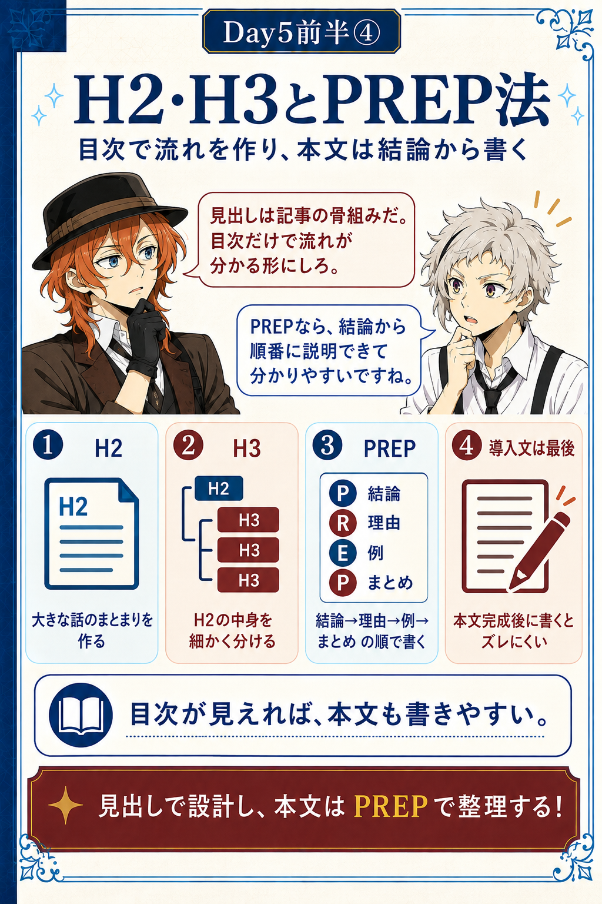
Day5前半④ H2・H3とPREP法
H2は大きな章、H3はその章の中を細かく分ける見出し。目次だけ読んでも流れが分かるくらいに整理すると、本文が書きやすくなります。
P：Point最初に結論。
R：Reasonなぜそう言えるのか。
E：Example具体例・体験・数字。
P：Point最後にもう一度まとめ。
導入文は本文の後に書くのも有効です。本文が完成してから書けば、入口と中身のズレを減らせます。
中也「最初に結論を言え。理由と例はその後だ。」
敦「PREPなら“何が言いたいのか分からない文章”を防ぎやすいですね。」
18
検索結果で伝わる「SEOタイトル」を作る
Day5前半⑤
SEOタイトルの基本
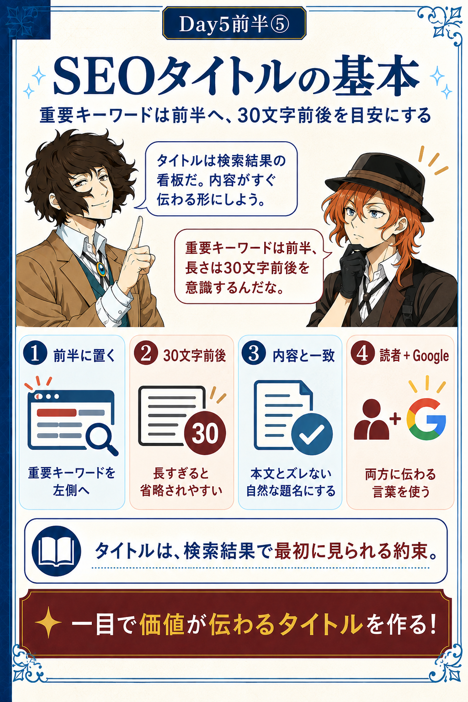
Day5前半⑤ SEOタイトルの基本
タイトルはGoogleへの説明と、読者への看板の2役。 重要キーワードを前半に置き、30文字前後を目安に、本文内容と一致する自然なタイトルを作ります。
🔑 重要KWを前半何の記事か早く伝える。
📏 30文字前後長すぎて切れにくい目安。
🎯 内容と一致タイトルで約束したことを本文で答える。
👀 一目で価値読む理由が分かる表現にする。
太宰「タイトルだけ派手にしてクリックさせるのは？」
中也「本文と違ったら釣りだろ。短期でクリックされても信用を失う。」
Day5前半⑥
数字・ターゲット・メリットを自然に入れる
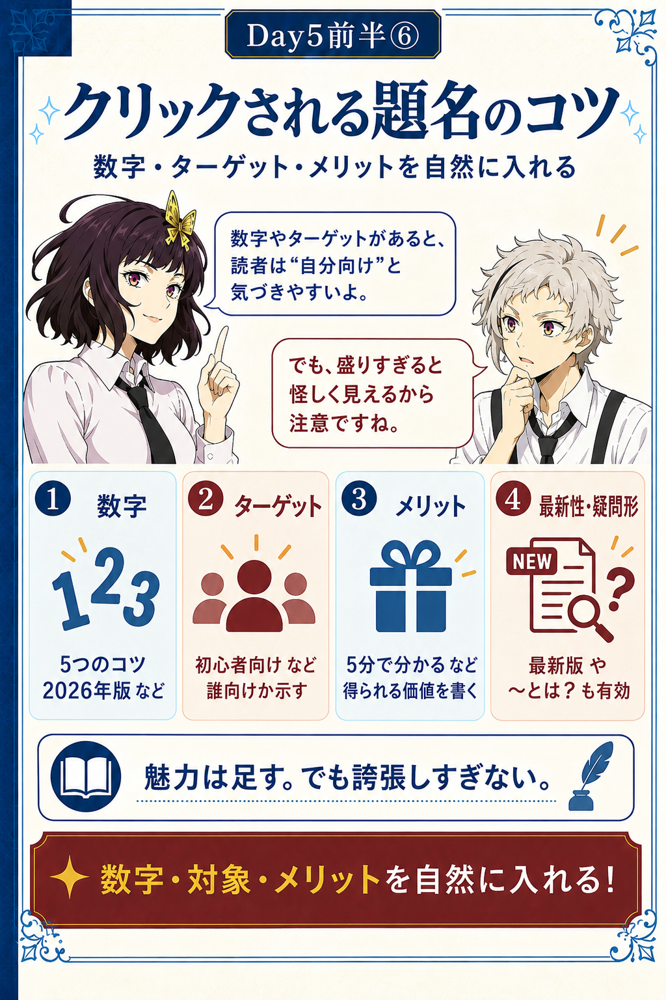
Day5前半⑥ クリックされる題名のコツ
🔢 数字「5つのコツ」「2026年版」など具体性を出す。
👤 ターゲット「初心者向け」など誰向けか示す。
🎁 メリット「5分で分かる」など読む価値を示す。
❓ 疑問形「〜とは？」「なぜ？」で好奇心を刺激する。
パワーワードは便利ですが、1〜2個程度に抑え、盛りすぎない方が自然です。年号を入れたら更新も忘れないようにします。
与謝野「全部入れれば強い、じゃない。読者が一瞬で理解できることの方が大事だよ。」
敦「“初心者向け”“5つのコツ”くらいなら自然に使えそうです。」
Day5前半⑦
タイトルのNGと注意点
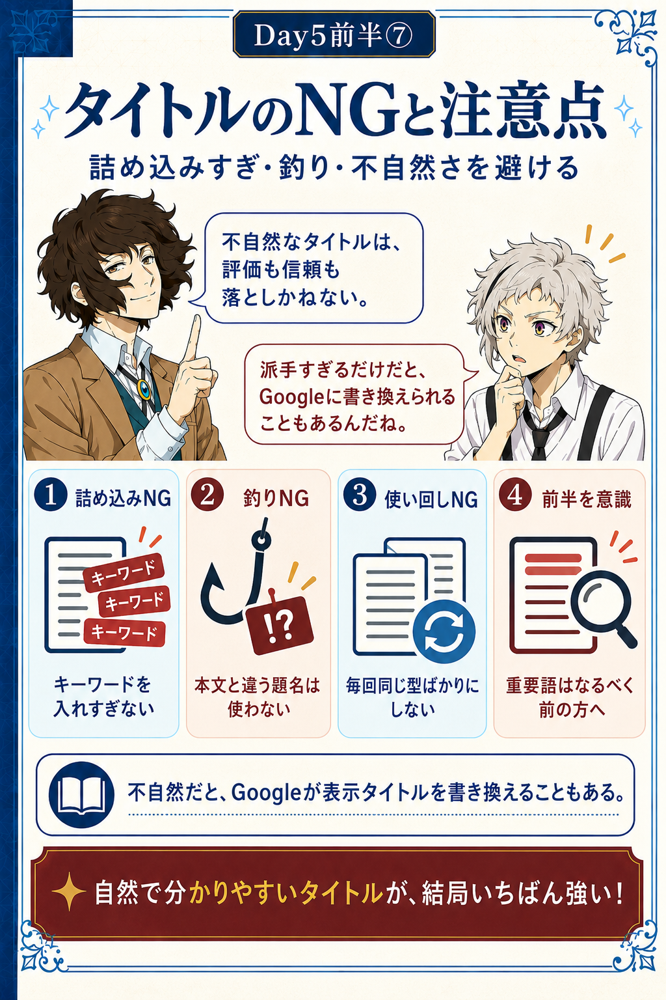
Day5前半⑦ タイトルNGと注意点
- キーワードを不自然に詰め込みすぎない
- 本文にない内容をタイトルで約束しない
- 同じテンプレをサイト内で使い回しすぎない
- 重要キーワードは前半に置くが、不自然な語順にしない
- 数字や記号は使いすぎない
△ 詰め込み
「副業 始め方 初心者 稼ぐ 方法 2026 簡単 在宅」
◎ 自然
「副業の始め方｜初心者が失敗しにくい5つの手順」
GoogleはタイトルタグだけでなくH1や本文などから表示タイトルを書き換えることがあります。小手先より、読者に自然に伝わり、本文と一致しているタイトルを優先します。
Day5前半⑧ / 実習
AIへ指示し、SEOタイトルとPREP目次を作る
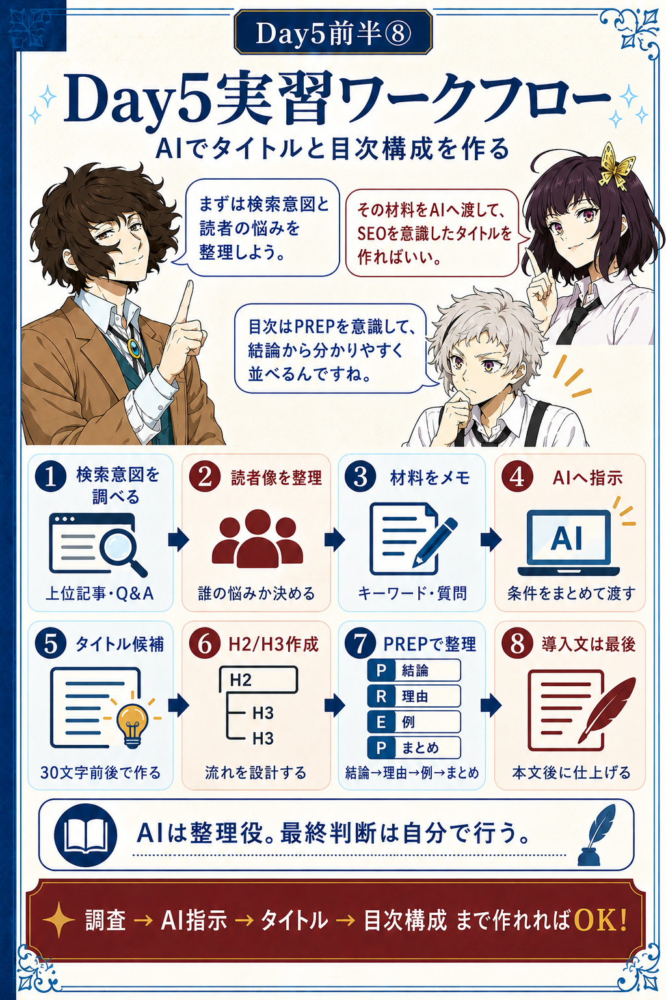
Day5前半⑧ AI実習ワークフロー
調べた情報を材料にしてAIへ指示し、SEOを意識したタイトルと、PREP法（結論→理由→具体例→まとめ）に沿った目次構成を作ります。
1調査検索意図・競合
2材料悩み・経験・数字
3AI条件つきで指示
4修正自分で仕上げる
AIへの指示例：
「キーワードは○○。対象は初心者。重要キーワードを前半に置き、30文字前後でタイトルを5案。数字・ターゲット・メリットは自然に使う。次に、検索意図に答えるH2/H3構成をPREP法の流れで作って。」
太宰「“いい感じのタイトルと目次を作って”じゃダメ？」
与謝野「Day1からやってるだろ。材料と条件を渡す。そうすればAIの仕事も安定する。」
敦「検索意図を調べた内容が、そのままAIへの材料になるんですね。」
Day5前半のゴール：
検索意図を調べ、記事構成案を作り、重要キーワードを前半に置いた自然なSEOタイトルを作る。
その情報をAIへ渡し、PREP法に沿ったH2/H3目次構成まで作れれば完了です。
DAY5 後半 / タイトル × 見出し × AI検索
タイトルで人に選ばれ、
見出しで検索エンジンとAIに伝える。
これからの記事づくりでは、SEOだけを意識して言葉を詰め込むのではなく、人が「読みたい」と思うタイトルと、検索エンジンやAIが「何について書かれているか」を理解しやすい見出しを別々の役割として設計します。
これからの記事づくりでは、タイトルは人にクリックされるため、見出しは検索エンジンやAIに内容を正しく伝えるために設計することが重要。
タイトルは「誰向けか・何が得られるか・どんな状況の人向けか」を具体的に。見出しは1見出し1テーマで、読者が実際に検索しそうな問いに近づけ、直下ですぐ答えを示します。
20
タイトルと見出しの役割を分ける
Day5後半①
タイトルと見出しは「同じもの」じゃない
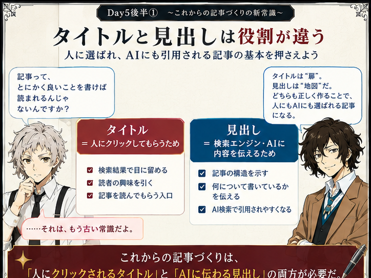
Day5後半① タイトルと見出しの役割
🚪 タイトル検索結果やnote一覧で「読んでみよう」と思ってもらう入口。
🗺️ 見出し記事の流れを示し、読者が欲しい場所へ迷わず進める地図。
🤖 AI・検索向け何について、どんな順番で答えている記事かを理解してもらう構造。
敦「タイトルと見出しって、どっちも目立つ文字だから同じ役割だと思ってました。」
太宰「タイトルは店の看板、見出しは店内の案内板。両方雑だと迷子が増えるね。」
中也「まず役割を分けろ。タイトルで呼び込み、見出しで答えまで連れていく。」
Day5後半②
売れる・読まれるタイトルは「センス」より設計
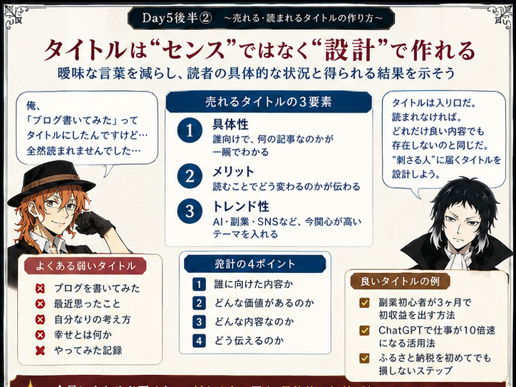
Day5後半② タイトルは設計で作る
「初心者向け」「徹底解説」「完全版」だけでは、似たタイトルに埋もれやすくなります。誰に、どんな価値を、どんな内容で、どう伝えるかを決めると、タイトルは感覚ではなく設計できます。
👤 誰に？「初心者」より「1本も納品したことがない人」のように具体化。
🎁 何が得られる？方法だけでなく、読んだ後の結果を見せる。
📌 どんな内容？何の記事か一目で分かる具体性を持たせる。
🗣️ どう伝える？数字や最新性は使いすぎず、一番強い要素を軸にする。
太宰「“完全版！徹底解説！知らないと損！”で全部盛りは？」
与謝野「胡散臭くなるね。必要なのは大声じゃなく、“自分向けだ”と分かる具体性だよ。」
Day5後半③
見出しは本の目次と同じ。階層を守る
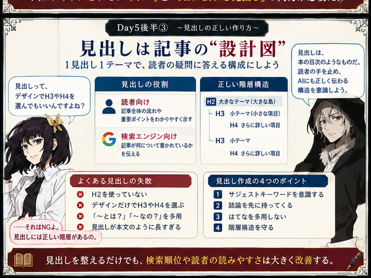
Day5後半③ 見出しは記事の設計図
H2は大きなテーマ、H3はその中の小テーマ、H4はさらに細かい項目。 デザインの見た目だけでタグを選ばず、親子関係を守ります。
H2＝大きな島記事の主要テーマを分ける。
H3＝島の中の場所H2を具体的な項目へ分解する。
結論を先に最初のH2で検索した答えを素直に示す。
長すぎない見出し自体を本文のような長文にしない。
森「H2の下にいきなりH4を置くのは、2階から4階へ階段なしで飛ぶようなものだね。」
敦「見た目の大きさじゃなく、“話の親子関係”で決めるんですね。」
Day5後半④
AIに引用されやすい見出しは「問い → すぐ答え」
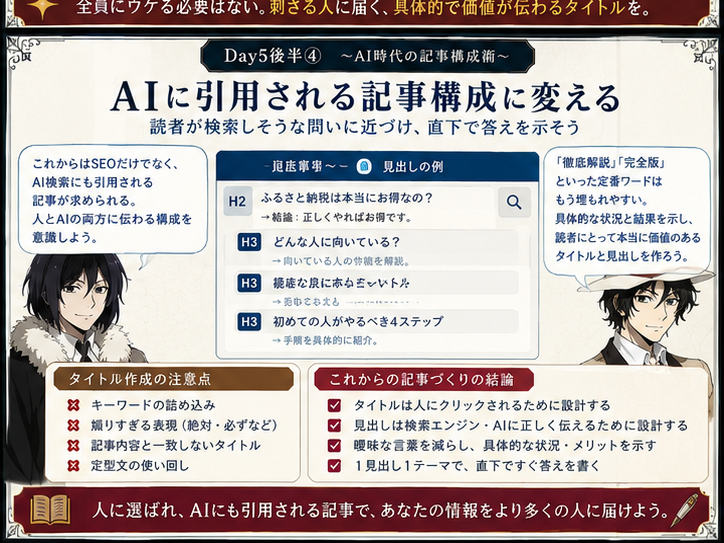
Day5後半④ AIに引用される見出し
AI検索も意識するなら、人が実際に入力しそうな質問を見出しに近づけ、その直下で前置きせず結論を書くと、答えの位置が分かりやすくなります。
△ ふわっとした見出し「効率化のポイント」
→ 何の効率化か分かりにくい。
◎ 問いが具体的「AIで記事制作を効率化するには？」
→ 直下に「3つの手順でできます」と答える。
- 1見出し1テーマ・1つの問いにする
- 見出しの直下で、まず結論を示す
- 「やり方・注意点・失敗例」は必要なら別見出しに分ける
- 具体的な数字や結果があるなら本文で示す
中也「“メリット・デメリット”だけじゃ雑だ。読者が実際に聞きそうな言葉にしろ。」
太宰「質問されたら、最初に答える。会話と同じだね。」
21
古い型を、具体的で引用されやすい形に直す実習
Day5後半⑤ / 実習①
曖昧なタイトルを「読者の状況」まで具体化する
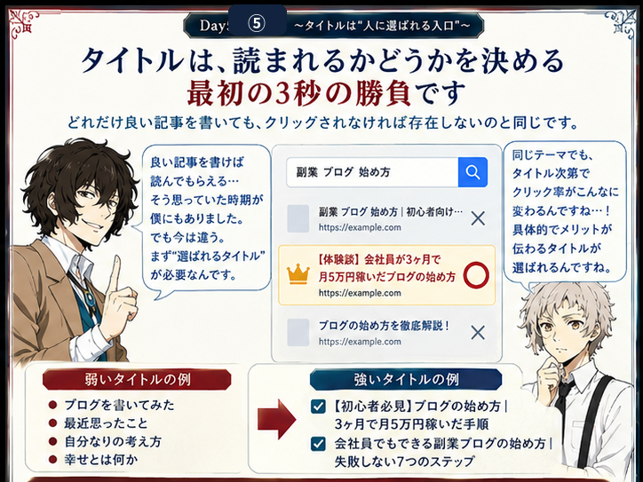
Day5後半⑤ 曖昧タイトルを具体化
△ 曖昧
「ブログ初心者向け｜記事の書き方を徹底解説」
◎ 状況が見える
「初めての記事が書き終わらない人へ｜迷わず構成を作る4ステップ」
「初心者向け」を全部禁止するわけではありません。 それだけに頼らず、「夜1時間しかない」「1本も納品したことがない」など、その人の今の状況まで言えると自分ごと化されやすくなります。
敦「“初心者”だけだと範囲が広いんですね。」
与謝野「そう。どんな初心者なのか、今どこで困っているのかまで言えると強いよ。」
Day5後半⑥ / 実習②
方法より「得られる結果」を前に出す
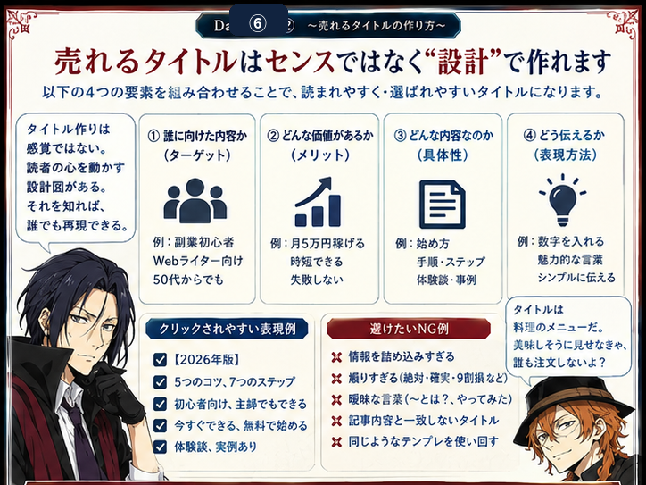
Day5後半⑥ 読者の状況とメリット
方法だけ「ChatGPTを使ってみた」では、読む理由が弱い。
結果を示す「ChatGPTで記事構成の時間を30分→10分にした手順」なら変化が分かる。
数字はリアルに根拠のない「9割が損」より、自分の具体的な数字を使う。
煽らない「絶対」「必ず」ではなく、できる範囲と条件を正直に示す。
太宰「“絶対に10倍速くなる！”の方が目立つよ？」
中也「目立って信用なくしてどうすんだ。実際に出た数字だけ使え。」
Day5後半⑦ / 実習③
見出しを「1見出し1テーマ」の質問形式へ直す
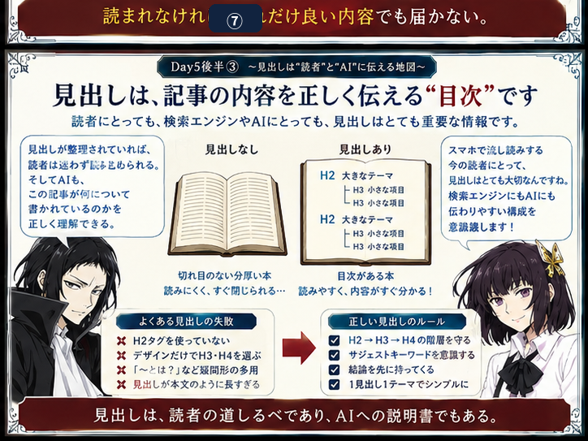
Day5後半⑦ 1見出し1テーマ
△ 詰め込み
H2「AI記事制作のやり方・メリット・注意点・おすすめツール」
◎ 分ける
H2「AIで記事制作を効率化するには？」
H2「AI記事制作で注意すべきことは？」
AI検索を意識するなら：
最初のH2で記事全体の結論を示し、その後のH2/H3で「なぜ？」「どうやる？」「注意点は？」と1つずつ答えます。
森「1つの引き出しに全部を突っ込むより、ラベルを付けて分けた方が探しやすいだろう？」
敦「見出しも同じで、答えを1個ずつ分けるんですね。」
Day5後半⑧ / 実習④
タイトルは人、見出しは人＋検索＋AIを意識して仕上げる
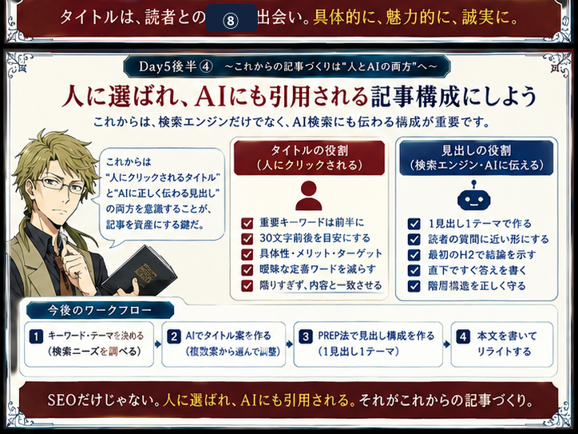
Day5後半⑧ 実践ワークフロー
1材料KW・読者・悩み
2タイトルAIで複数案
3見出し質問形式で整理
4結論各見出し直下へ
5人が仕上げ良い部分を統合
AIへの指示例：
「テーマ：○○、キーワード：○○、想定読者：○○。まず、曖昧な定番ワードや煽りを避け、読者の具体的な状況と得られる結果が伝わるタイトルを5案。次に、1見出し1テーマで、読者が検索しそうな質問形式のH2/H3を作り、最初のH2で結論を示してください。」
太宰「AIが出した5案から1個をそのまま採用？」
与謝野「A案の具体性、B案の読みやすさ、C案の言葉遣い。良いところを組み合わせて自分で仕上げる。」
中也「タイトルで人を呼び、見出しで人とAIに道を示し、本文で信用させる。そこまでが記事設計だ。」
Day5後半のゴール：
タイトルは「誰向け・何が得られる・今どんな状況か」を具体的にして、人に選ばれる入口へ直す。
見出しは1見出し1テーマの質問に近づけ、直下で結論を示し、検索エンジンやAIにも内容が伝わる構造へ整える。